TongHopTin
Tong hop tin tuc - 2026-05-23
Ông Kevin Warsh chính thức trở thành Chủ tịch Cục Dự trữ Liên bang Mỹ 🔗 MOI
Facebook Twitter Lưu bài viết Bản in Copy link Tân Chủ tịch Cục Dự trữ Liên bang Mỹ (Fed) Kevin Warsh ngày 22/5 (giờ địa phương) đã tuyên thệ nhậm chức tại Nhà Trắng với cam kết theo đuổi định hướng c
Nỗi lo về giá xăng kỷ lục phủ bóng đảng Cộng hòa 🔗 MOI
Khi ông Joe Biden nhậm chức vào tháng 1/2021, giá xăng trung bình tại Mỹ là 2,42 USD/gallon (khoảng 3,8 lít). Nhưng đến tháng 6/2022, sau khi chiến sự Ukraine nổ ra, giá xăng vọt lên mức 5,02 USD/gall
Châu Á - Thái Bình Dương bùng nổ đầu tư trung tâm dữ liệu 🔗 MOI
Xu hướng mới Lĩnh vực trung tâm dữ liệu tại châu Á - Thái Bình Dương thu hút mức đầu tư kỷ lục 11,6 tỉ USD trong năm 2025, với khả năng tiếp cận nguồn điện ổn định ngày càng quyết định nơi phát triển
Khi nào Fed cắt giảm lãi suất?: Hàng loạt ngân hàng thay đổi 180 độ, cùng loại trừ 1 khả năng 🔗 MOI
TIN MỚI Ngân hàng đầu tư đồng thời là công ty dịch vụ tài chính hàng đầu này hoài nghi về khả nănng các nhà hoạch định chính sách sẽ nhất trí cắt giảm lãi suất khi tình trạng lạm phát còn dai dẳng. Cá
Giá nhà quá cao, công ty 'tặng' xe điện cho nhân viên, còn được sạc miễn phí 🔗 MOI
Một công ty ở Brittany đang cung cấp xe điện cho nhân viên để giảm chi phí đi lại - Ảnh minh họa: Boursorama Tại vùng Bretagne ven biển của Pháp, một doanh nghiệp sản xuất khuôn nhựa cho chai lọ mỹ ph
Trung Quốc phát động chiến dịch 2 năm liên quan chứng khoán xuyên biên giới 🔗 MOI
Cảnh sát tuần tra bên ngoài tòa nhà Ủy ban Điều tiết chứng khoán Trung Quốc tại Bắc Kinh ngày 8-2-2024 - Ảnh: AFP Theo Hãng tin AFP, ngày 22-5, Ủy ban Điều tiết chứng khoán Trung Quốc (CSRC) thông báo
Mỹ tung đợt tài liệu thứ hai về UFO, trong đó có đĩa bay và quả cầu lửa bí ẩn 🔗 MOI
Theo chỉ đạo của Tổng thống Mỹ Donald Trump, các tài liệu vể UFO sẽ được công bố dần cho toàn bộ người dân Mỹ và thế giới - Ảnh minh họa Ngày 22-5, Bộ Chiến tranh Mỹ tiếp tục công bố tài liệu mật liên
Sẽ phát triển thể thao điện tử gắn với kinh tế sáng tạo 🔗 MOI
Ngày 14/5, tại Hà Nội, Cục Thể dục thể thao Việt Nam và Tổng công ty Truyền thông đa phương tiện (VTC) ký kết biên bản thỏa thuận hợp tác phát triển thể thao điện tử quốc gia giai đoạn 2026 - 2030. Lễ

Phát huy vai trò chủ đạo của kinh tế nhà nước trong kỷ nguyên mới 🔗 MOI
Kinh tế Thay vì dựa trên quy mô sở hữu, bài viết phân tích vai trò của kinh tế nhà nước trong nền kinh tế Việt Nam theo cách tiếp cận chức năng: ổn định kinh tế vĩ mô, định hướng phát triển và thiết l
Nam thanh niên dùng dao đe dọa, bóp cổ thai phụ, cướp 40 điện thoại 🔗 MOI
Nghi phạm Tiến tại cơ quan công an và tang vật công an thu giữ - Ảnh: Công an cung cấp Ngày 22-5, Công an tỉnh Thái Nguyên cho biết các lực lượng nghiệp vụ vừa phối hợp Công an xã Vân Hồ, Phòng Cảnh s
Khủng hoảng dầu mỏ ở eo biển Hormuz bước vào giai đoạn nguy hiểm 🔗 MOI
(PLO)- Cơ quan Năng lượng Quốc tế (IEA) cảnh báo rằng thị trường dầu mỏ có nguy cơ bị đẩy vào “vùng đỏ” do dự trữ cạn dần, trong khi bất ổn tại Hormuz tiếp tục gây áp lực lên nguồn cung toàn cầu. Cơ q

Dự thảo văn kiện Đại hội XIV của Đảng: Nhìn từ lăng kính kinh tế - tài chính 🔗 MOI
Thời sự Dự thảo Báo cáo chính trị trình Đại hội XIV của Đảng đặt mục tiêu tăng trưởng GDP giai đoạn 2026–2030 đạt từ 10%/năm trở lên với định hướng rõ ràng chuyển đổi mô hình tăng trưởng dựa vào khoa
Ngân hàng tương lai cạnh tranh bằng trải nghiệm khách hàng, dữ liệu và AI 🔗 MOI
Chuyên gia Guillaume de Gantès trình bày keynote về chủ đề: "Chuyển đổi số ngành ngân hàng - Những xu hướng định hình tương lai' - Ảnh: VTB VietinBank vừa tổ chức Hội thảo "Chuyển đổi số: Xu hướng và

Đổi mới mô hình tăng trưởng gắn với tái cơ cấu nền kinh tế trong giai đoạn mới 🔗 MOI
Pháp luật Triển khai Nghị quyết số 07-NQ/TW ngày 18/11/2016 của Bộ Chính trị về chủ trương, giải pháp cơ cấu lại ngân sách nhà nước, quản lý nợ công, việc cơ cấu lại ngân sách nhà nước, quản lý nợ côn
Việt Nam sẵn sàng tạo điều kiện cho các tập đoàn công nghệ cao của Mỹ đầu tư 🔗 MOI
Chiều 22/5, tại Trụ sở Trung ương Đảng, Tổng Bí thư, Chủ tịch nước Tô Lâm đã tiếp ông David Zapolsky, Phó chủ tịch cấp cao, Giám đốc Pháp lý và Quan hệ toàn cầu của Tập đoàn Amazon. Tổng Bí thư, Chủ t
Cần thay đổi nhận thức về đầu tư cho an ninh mạng 🔗 MOI
Không ít doanh nghiệp vẫn xem đầu tư cho bảo mật, an ninh mạng chỉ là khoản chi bổ sung, thay vì yếu tố mang tính sống còn đối với hoạt động vận hành và sự tồn tại của doanh nghiệp, nhận định tại diễn

Tiếp nhận phản ánh kiến nghị của doanh nghiệp 🔗 MOI
HỌ VÀ TÊN * EMAIL * SỐ ĐIỆN THOẠI * ĐỊA CHỈ * TIÊU ĐỀ * FILES ĐÍNH KÈM NỘI DUNG * RadEditor - HTML WYSIWYG Editor. MS Word-like content editing experience thanks to a rich set of formatting tools, dro

Khu Công nghiệp, Khu Kinh tế 🔗 MOI
Phát triển khoa học công nghệ, đổi mới sáng tạo và chuyển đổi số đóng vai trò quan trọng để nước ta chuyển đổi mô hình tăng trưởng và đạt mục tiêu tăng trưởng 2 con số. Chính vì vậy, việc phát huy ngu
Ông Trump thông báo điều thêm 5.000 binh sĩ đến Ba Lan 🔗 MOI
Trước đó, Lầu Năm Góc thông báo sẽ giảm khoảng 5.000 quân ở châu Âu, cụ thể là ở Đức, và giới chức Mỹ xác nhận khoảng 4.000 binh sĩ sẽ không tiếp tục được triển khai đến Ba Lan. Tuy nhiên, chủ nhân Nh
Chiến sự Ukraine ngày 1.549: Xung đột chết người, Ukraine mua thiết bị tên lửa Mỹ 🔗 MOI
Binh sĩ Ukraine bên hệ thống tên lửa HAWK tại tỉnh Mykolaiv hôm 30.3 ẢNH CHỤP MÀN HÌNH UKRINFORM Trang The Kyiv Independent ngày 22.5 dẫn lời giới chức địa phương Ukraine cho hay ít nhất 5 người thiệt

Khơi thông niềm tin, mở đường an cư 🔗 MOI
Việc Chính phủ và UBND TP HCM quyết tâm tháo gỡ cho 838 dự án bất động sản "vàng" đang "đắp chiếu" là tín hiệu đáng mừng, mở ra cơ hội giải phóng nguồn lực khổng lồ cho nền kinh tế. Tuy nhiên, đây là
VinFast sắp có xe máy điện mới phong cách touring, động cơ đặt giữa, kính chắn gió cỡ lớn 🔗 MOI
Hình ảnh bản vẽ mẫu xe điện mới của VinFast - Ảnh chụp màn hình Công báo sở hữu công nghiệp phát hành ngày 15-5 xuất hiện loạt bản vẽ kiểu dáng xe máy điện mới của VinFast, trong đó đáng chú ý nhất là

Khơi thông các động lực tăng trưởng kinh tế Việt Nam 🔗 MOI
Pháp luật Nhờ sự phối hợp đồng bộ của chính sách tài khóa và tiền tệ trong việc thúc đẩy cầu trong nước, kinh tế Việt Nam năm 2025 phục hồi mạnh, với tăng trưởng vượt mục tiêu đề ra. Về ổn định kinh t
Ukraine tố Nga tập kích Sumy, Matxcơva cáo buộc drone Kiev đánh trúng ký túc xá ở Luhansk 🔗 MOI
Hiện trường sau vụ tấn công của Nga ở tỉnh Sumy của Ukraine - Ảnh: CẢNH SÁT QUỐC GIA UKRAINE Theo Hãng tin Pravda của Ukraine , Cảnh sát quốc gia Ukraine ngày 22-5 tố Nga đã sử dụng bom dẫn đường, thi
Tổng Bí thư, Chủ tịch nước: Việt Nam sẵn sàng tạo thuận lợi cho các tập đoàn công nghệ cao của Mỹ 🔗 MOI
Tổng Bí thư, Chủ tịch nước Tô Lâm tiếp Phó chủ tịch cấp cao Amazon David Zapolsky ngày 22-5 - Ảnh: TTXVN Chiều 22-5, tại Trụ sở Trung ương Đảng, Tổng Bí thư, Chủ tịch nước Tô Lâm đã tiếp ông David Zap
Năng lượng & Khoáng sản 🔗 MOI
Ngày 9/4, Ủy ban Thường vụ Quốc hội đã cho ý kiến về dự thảo Nghị quyết của Quốc hội về việc ban hành một số quy định về thuế bảo vệ môi trường, thuế giá trị gia tăng, thuế tiêu thụ đặc biệt đối v
Những đời xe nào có thể yên tâm sử dụng xăng sinh học E10? 🔗 MOI
Xăng sinh học E10 là loại nhiên liệu pha 10% ethanol sinh học với 90% xăng khoáng truyền thống (RON 95). Loại xăng này được đánh giá giúp giảm phát thải khí độc hại và đã phổ biến tại nhiều quốc gia t
Chứng khoán đứt chuỗi tăng 8 tuần liên tiếp 🔗 MOI
Diễn biến chỉ số VN-Index từ đầu năm đến nay - Dữ liệu: VSF VN-Index giảm 45 điểm sau một tuần Thị trường chứng khoán khép lại tuần giao dịch từ ngày 19 đến 22-5 trong sắc đỏ khi áp lực bán gia tăng m
Washington Post: Mỹ tốn hơn 1/2 kho tên lửa THAAD để bảo vệ Israel trước Iran 🔗 MOI
Quân đội Mỹ triển khai hệ thống phòng thủ tên lửa THAAD tại Israel vào tháng 3-2019 - Ảnh: Quân đội Mỹ Theo báo Washington Post ngày 21-5, các nguồn tin cho biết Mỹ đã sử dụng hơn một nửa kho tên lửa

Kiến tạo không gian phát triển mới cho kinh tế tập thể 🔗 MOI
Pháp luật Trong giai đoạn 2021-2025, dựa vào mục tiêu phát triển, điều kiện ngân sách và nhu cầu hỗ trợ, năng lực của các hợp tác xã, Thủ tướng Chính phủ đã ban hành Chương trình hỗ trợ phát triển kin
Đại tướng Phan Văn Giang: Hợp tác quốc phòng, dầu khí là trụ cột quan trọng trong quan hệ Việt - Nga 🔗 MOI
Đại tướng Phan Văn Giang và Đại tướng Sergei Kuzhugetovich Shoigu - Ảnh: THU TRANG Hoạt động nằm trong khuôn khổ chuyến thăm chính thức Nga và đồng chủ trì Phiên họp tham vấn lần thứ hai trong lĩnh vự

Sắt thép là hàng xuất khẩu chủ lực sang Indonesia 4 tháng đầu năm 🔗 MOI
Lực kéo từ nhóm hàng sắt thép và nguyên liệu công nghiệp đã giúp tổng kim ngạch xuất nhập khẩu Việt Nam - Indonesia đạt hơn 6,07 tỷ USD trong 4 tháng đầu năm 2026, tăng gần 7% so với cùng kỳ năm 2025.

Nhìn lại 1 năm thực thi Nghị quyết 68-NQ/TW 🔗 MOI
Doanh nghiệp Sau 1 năm triển khai Nghị quyết số 68-NQ/TW, nhiều doanh nghiệp công nghệ Việt ghi nhận những chuyển biến tích cực từ môi trường kinh doanh, cơ chế hỗ trợ và tư duy điều hành theo hướng k
Tạp chí Kinh tế Sài Gòn 🔗 MOI
Kinh tế Sài Gòn giữ bản quyền nội dung của trang web thesaigontimes.vn. Không sử dụng lại nội dung trên trang này dưới mọi hình thức, trừ khi được Kinh tế Sài Gòn đồng ý bằng văn bản. Trang ngoài sẽ đ
Tạp chí Kinh tế Sài Gòn 🔗 MOI
Kinh tế Sài Gòn giữ bản quyền nội dung của trang web thesaigontimes.vn. Không sử dụng lại nội dung trên trang này dưới mọi hình thức, trừ khi được Kinh tế Sài Gòn đồng ý bằng văn bản. Trang ngoài sẽ đ
Tạp chí Kinh tế Sài Gòn 🔗 MOI
Kinh tế Sài Gòn giữ bản quyền nội dung của trang web thesaigontimes.vn. Không sử dụng lại nội dung trên trang này dưới mọi hình thức, trừ khi được Kinh tế Sài Gòn đồng ý bằng văn bản. Trang ngoài sẽ đ
Tạp chí Kinh tế Sài Gòn 🔗 MOI
Kinh tế Sài Gòn giữ bản quyền nội dung của trang web thesaigontimes.vn. Không sử dụng lại nội dung trên trang này dưới mọi hình thức, trừ khi được Kinh tế Sài Gòn đồng ý bằng văn bản. Trang ngoài sẽ đ
Báo Trung Quốc tiếc nuối khi đội nhà thua U.17 Nhật Bản, nhưng vẫn cảm thấy… may mắn 🔗 MOI
U.17 Trung Quốc kiên cường ở hiệp 2, nhưng không đủ Theo Tân Hoa Xã , đội U.17 Trung Quốc khép lại giải đấu với vị trí á quân sau trận thua Nhật Bản 2-3 tại Ả Rập Xê Út. Thành tích này vẫn được xem là
Điểm nóng xung đột ngày 23-5: Đối đầu Iran, Mỹ thiệt hại nặng dàn UAV chủ lực 🔗 MOI
Bloomberg dẫn lời một nguồn thạo tin cho biết Washington đã mất khoảng 30 máy bay không người lái (UAV) MQ-9 Reaper kể từ khi xung đột với Iran bùng phát, bao gồm các thiết bị bị bắn hạ, phá hủy hoặc
World Cup 2026 đậm chất AI thế nào 🔗 MOI
Đồng tổ chức bởi Canada, Mexico và Mỹ tại 16 thành phố, Giải vô địch bóng đá thế giới FIFA World Cup 2026 có thể thức mở rộng với 48 đội và 104 trận đấu. Trận khai mạc diễn ra ngày 11/6. World Cup 202
Cậu bé 12 tuổi gốc Việt tốt nghiệp thủ khoa ở Mỹ với điểm tuyệt đối 🔗 MOI
Tuần này, Phung Hieu Diep, thường gọi là Hieu, tốt nghiệp ngành Toán tại trường Cao đẳng Evergreen Valley, bang California. Hieu đạt điểm trung bình tích lũy (GPA) tuyệt đối 4.0 và là thủ khoa của trư

Chuyên đề Agribank 🔗 MOI
Trước áp lực thực thi Nghị định số 70/2025/NĐ-CP về hóa đơn điện tử và quản lý thuế, Agribank tổ chức hội nghị tập huấn toàn quốc, thống nhất quy trình hỗ trợ và giới thiệu gói giải pháp số dành riêng
Công chức thuế ở Cần Thơ bị bắt quả tang nhận 100 triệu đồng vòi của doanh nghiệp 🔗 MOI
Nhiều chính sách ưu đãi hấp dẫn để 'đánh thức’ du lịch hè An Giang 🔗 MOI
An Giang khai mạc Ngày hội du lịch, ẩm thực kết hợp Hội chợ xúc tiến thương mại, sản phẩm OCOP - Rạch Giá, An Giang lần thứ 2 năm 2026 và khởi động du lịch hè - Ảnh: CHÍ CÔNG Tối 22-5, An Giang khai m
Bắt quả tang cán bộ thuế nhận tiền của doanh nghiệp 🔗 MOI
Trần Minh Trường bị bắt quả tang nhận tiền của doanh nghiệp - Ảnh: CACC Ngày 22-5, Cơ quan cảnh sát điều tra Công an TP Cần Thơ cho biết đã tống đạt các quyết định khởi tố vụ án, khởi tố bị can và thi

TỔNG QUAN TỔNG QUAN KINH TẾ 🔗 MOI
Kinh tế Hoạt động điều hành chính sách tài khóa năm 2025 diễn ra trong bối cảnh tình hình kinh tế trong nước và quốc tế tiếp tục diễn biến phức tạp, căng thẳng thương mại toàn cầu gia tăng, đặc biệt l
Hàn Quốc lên kế hoạch tung 90.000 căn nhà cho thuê dành cho người trẻ ở thủ đô Seoul 🔗 MOI
Các tòa nhà thương mại và khu dân cư nhìn từ đỉnh núi Gyeyangsan ở thành phố Incheon, phía tây thủ đô Seoul, Hàn Quốc - Ảnh minh họa: AFP Theo Hãng thông tấn Yonhap, kế hoạch được Bộ trưởng Bộ Kinh tế

Hưởng lợi từ giá phân bón, DPM lãi lớn quý đầu năm 🔗 MOI
Báo sau thuế hơn 410 tỷ đồng trong quý 1/2026, DPM đã hoàn thành tới 60% mục tiêu lợi nhuận năm chỉ sau một quý đầu năm. Ảnh: PVFCCo - Phú Mỹ. Tổng công ty Phân bón và Hóa chất Dầu khí (PVFCCo -

Tiếp nhận phản ánh kiến nghị của công dân 🔗 MOI
HỌ VÀ TÊN * EMAIL * SỐ ĐIỆN THOẠI * ĐỊA CHỈ * TIÊU ĐỀ * FILES ĐÍNH KÈM NỘI DUNG * RadEditor - HTML WYSIWYG Editor. MS Word-like content editing experience thanks to a rich set of formatting tools, dro

Ấn phẩm 🔗 MOI
Tạp chí Kinh tế - Tài chính Online. Cơ quan chủ quản: Bộ Tài chính Giấy phép xuất bản số: 107/GP-BVHTTDL ngày 26/8/2025. Tạp chí Kinh tế - Tài chính Online: e-ISSN 3093-3498.

Báo cáo tài chính doanh nghiệp 🔗 MOI
Lợi nhuận của PC1 trong quý đầu năm 2026 tăng trưởng mạnh so với cùng kỳ năm trước, nhờ dự án bất động sản Tháp Vàng và thanh lý khoản đầu tư vào công ty liên kết.

Chính phủ với doanh nghiệp 🔗 MOI
20/03/2026 (Chinhphu.vn) - Chính phủ ban hành Nghị quyết số 11/2026/NQ-CP về chi phí tiền lương Ngân hàng thương mại TNHH một thành viên Xây dựng Việt Nam, Ngân... 04/03/2026 (Chinhphu.vn) - Chính phủ

Hình ảnh hai hộ dân còn 'án ngữ' 50m mặt bằng, níu tiến độ đường tránh Đông Hà 🔗 MOI
Ban Quản lý Bảo trì giao thông thuộc Sở Xây dựng Quảng Trị cho biết địa phương đã bàn giao 13,25/13,3km mặt bằng, đạt 99,62%. Phần còn lại nằm tại khu vực nút giao Quốc lộ 1, thuộc xã Gio Linh, ảnh hư
Singapore đầu tư cho "tuổi thọ khỏe mạnh" 🔗 MOI
Singapore vừa phát động một chương trình nghiên cứu trị giá 350 triệu SGD nhằm giải quyết tình trạng suy giảm nhận thức và chức năng thể chất, đồng thời kêu gọi các công ty tư nhân cùng tham gia giải

Cảnh báo lạm dụng thẩm mỹ theo mạng xã hội 🔗 MOI
Ngày 22-5, tại Hội nghị Da liễu Thẩm mỹ toàn quốc lần thứ 9 do Bệnh viện Da liễu Trung ương tổ chức, PGS-TS Lê Hữu Doanh, Giám đốc bệnh viện, cho biết ngành da liễu Việt Nam đã có bước tiến đáng kể, t
Hạ U17 Trung Quốc, U17 Nhật Bản vô địch giải U17 châu Á 🔗 MOI
U17 Nhật Bản xuất sắc vô địch U17 châu Á 2026 - Ảnh: JFA Đội hình ra sân U17 Nhật Bản: Oshita, Motosuna, Takeuchi, Iwatsuchi, Chonan, Wada, Kitahara, Saito, Satomi, Kimura, Kurahashi. U17 Trung Quốc:
Trung Quốc suýt gây sốc cho Nhật Bản ở chung kết U17 châu Á 2026 🔗 MOI
* Ghi bàn: Wan Xiang 48’, Songyuan 79’ pen – Satomi 31’, Saito 42’, Kitahara 45+2. Lần gần nhất Trung Quốc thắng Nhật Bản ở vòng chung kết U17 châu Á đã từ năm 1988, với tỷ số 2-0 tại vòng bảng. Sau đ
Thắng kịch tính Trung Quốc, U.17 Nhật Bản lần thứ 5 đăng quang giải châu Á 🔗 MOI
Trận chung kết giải U.17 châu Á 2026 diễn ra lúc rạng sáng 23.5 là màn đọ sức giữa U.17 Nhật Bản và U.17 Trung Quốc . Trước đó ở bán kết, đội bóng xứ sở hoa anh đào giành chiến thắng đầy kịch tính trư
Những người Mỹ phải hầu tòa vì khoản nợ thời sinh viên 🔗 MOI
Hannah Bates, 30 tuổi, sống tại bang Michigan, Mỹ, năm 2019 quyết định vay 55.000 USD từ tập đoàn tài chính tư nhân Sallie Mae để theo học chương trình điều dưỡng. 6 năm sau, cô phải hầu tòa do bị Sal
Chuyên gia nêu 4 nhóm thực phẩm có thể âm thầm 'tàn phá' thận 🔗 MOI
Ước tính cứ 7 người trưởng thành ở Mỹ thì có 1 người mắc bệnh thận mạn tính . Đáng ngại hơn, có đến 90% trong số họ hoàn toàn không biết mình đổ bệnh, bởi các triệu chứng ở giai đoạn đầu thường diễn t

Trẻ sinh ra di truyền giang mai từ mẹ có điều trị được không? 🔗 MOI

Kiểm soát lạm phát trước những "biến số" cuối năm 🔗 MOI
Tài chính Tại Nghị quyết số 86/NQ-CP ngày 4/11/2025 về triển khai nhiệm vụ trọng tâm những tháng cuối năm 2025, Chính phủ tiếp tục yêu cầu về kiểm soát lạm phát, giữ vững ổn định kinh tế vĩ mô. Trong
Công Phượng ghi bàn, CLB Trường Tươi Đồng Nai chờ lên V-League 🔗 MOI
Công Phượng ăn mừng bàn thắng cho CLB Trường Tươi Đồng Nai - Ảnh: TTĐNFC Tối 22-5, CLB Trường Tươi Đồng Nai đến làm khách trên sân CLB TP.HCM ở vòng 20 Giải hạng nhất 2025-2026. Nếu thắng ở trận này,
Dragon Ball Super có thể hồi sinh 'con trai tà ác của Goku' sau 20 năm? 🔗 MOI
Xicor từng là một trong những nhân vật gây tranh cãi nhất của cộng đồng fan Dragon Ball - Ảnh: Brett Cardaro Sau hơn 10 năm đồng hành cùng manga Dragon Ball Super , họa sĩ Toyotarou đang cho thấy sự t
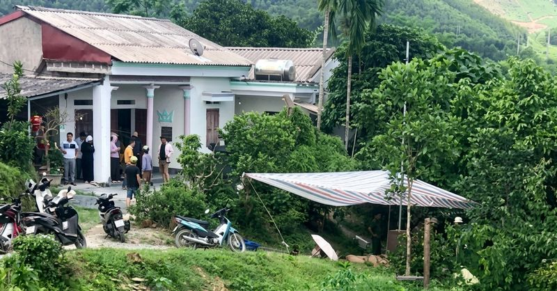
Điều tra nghi án anh trai chém vợ chồng em ruột thương vong 🔗 MOI
Hiện trường nơi xảy ra vụ việc - Ảnh: P.T. Trao đổi với Tuổi Trẻ Online chiều 22-5, một lãnh đạo UBND xã Minh Hòa (tỉnh Phú Thọ) cho biết cơ quan công an đang điều tra nguyên nhân vụ án mạng khiến một
Tranh chấp đất đai, khóa cổng nhốt công an và chủ đất, 2 vợ chồng lãnh án 🔗 MOI
Tòa án nhân dân khu vực 7 - Gia Lai tuyên án vụ án "lợi dụng các quyền tự do dân chủ xâm phạm quyền, lợi ích hợp pháp của cá nhân" và "giữ người trái pháp luật" chiều 22-5 - Ảnh: TẤN LỰC Ngày 22-5, Tò
CLB Đồng Tháp gỡ lại thể diện nhờ ngoại binh Brazil 🔗 MOI
Chiến thắng thứ 4 của Đồng Tháp ở mùa này - Ảnh: DFC Tối 22-5, CLB Đồng Tháp đã giành chiến thắng thứ 4 của mùa giải. Đáng chú ý, đây là chiến thắng thứ 2 trên sân khách của đoàn quân HLV Ngô Quang Sa
Trung Đông tối 22-5: Diễn biến mới ở eo biển Hormuz; 4 nước châu Âu ra tuyên bố chung về Israel 🔗 MOI
Người dân đi dạo trên bãi biển ở Bandar Abbas, Iran ngày 21-5. Đằng xa là những con tàu ở eo biển Hormuz - Ảnh: REUTERS Iran nói có 35 tàu đã đi qua eo biển Hormuz với sự cho phép của IRGC trong 24 gi
Không chịu đánh chung kết, Quang Dương và Phúc Huỳnh cùng vô địch đơn nam ở Philippines 🔗 MOI
Cả hai tay vợt Việt Nam đều được trao danh hiệu vô địch - Ảnh: PPL Chuyện lạ có thật vừa diễn ra chiều 22-5 ở Davao (Philippines). Hai tay vợt từ Việt Nam giành quyền vào trận chung kết đơn nam, Quang
Căng thẳng cung ứng điện tuần tới, đề xuất sớm áp giá điện giờ cao điểm, thấp điểm 🔗 MOI
Dự kiến tuần tới tiêu thụ điện tiếp tục lập kỷ lục - Ảnh: TTO Thông tin từ Công ty Vận hành hệ thống điện và thị trường điện quốc gia (NSMO) cho hay trong tuần qua, các đợt nắng nóng diện rộng cường đ

Huy động tài chính xanh hướng tới mục tiêu phát triển bền vững 🔗 MOI
Pháp luật Chuyển đổi năng lượng xanh đã trở thành xu thế toàn cầu mang tính bắt buộc, gắn liền với mục tiêu Net Zero và yêu cầu cạnh tranh trong chuỗi cung ứng quốc tế. Trong bối cảnh đó, doanh nghiệp
Việt Nam quan ngại sâu sắc trước cáo buộc của Mỹ với Đại tướng Raúl Castro 🔗 MOI
Người phát ngôn Bộ Ngoại giao Phạm Thu Hằng - Ảnh: BỘ NGOẠI GIAO Theo thông tin từ Bộ Ngoại giao, ngày 22-5, trả lời câu hỏi của phóng viên đề nghị cho biết phản ứng của Việt Nam trước cáo buộc của Bộ
Mỹ mở Lãnh sự quán mới ở Nuuk, dân Greenland kéo đến kêu gọi 'hãy về nhà đi!' 🔗 MOI
Nhiều người Greenland tập trung biểu tình vào ngày mở Lãnh sự quán mới của Mỹ tại Nuuk, Greenland hôm 21-5 - Ảnh: REUTERS Theo Hãng tin AFP, trong cuộc biểu tình tại thủ phủ Nuuk của Greenland cuối ng
Thiếu nữ 15 tuổi loạn thần do dùng điện thoại nhiều đêm liền không ngủ 🔗 MOI
Cán bộ Công an phường Cao Lãnh động viên, khuyên nhủ em tại bệnh viện - Ảnh: Công an tỉnh Đồng Tháp Ngày 22-5, Công an tỉnh Đồng Tháp cho biết vừa phối hợp người nhà đưa một thiếu nữ thức nhiều đêm bấ
Thủ tướng Lê Minh Hưng phân công thêm nhiệm vụ cho các Phó thủ tướng 🔗 MOI
Thủ tướng Lê Minh Hưng - Ảnh: VGP Theo đó, Thủ tướng phân công các Phó thủ tướng Chính phủ thay mặt Thủ tướng để theo dõi, chỉ đạo các địa phương triển khai thực hiện các nhiệm vụ phát triển kinh tế -
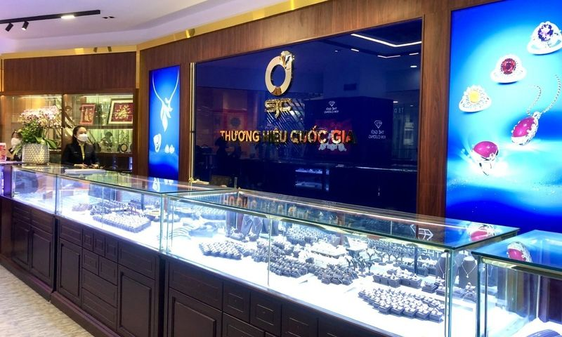
SJC: Doanh thu chạm đáy 10 năm, lợi nhuận lập đỉnh 🔗 MOI
Dù doanh thu năm 2025 xuống mức thấp nhất thập kỷ, SJC vẫn báo lãi sau thuế hơn 425 tỷ đồng, cao nhất từ trước đến nay. Ảnh minh họa: SJC Báo cáo tài chính năm 2025 đã kiểm toán tại Công ty TNHH MTV V

Điều hành giá cả thị trường, kiểm soát lạm phát năm 2026 🔗 MOI
Pháp luật Chính sách tiền tệ và chính sách tài khóa là hai công cụ quản lý kinh tế vĩ mô quan trọng của các quốc gia. Mỗi một chính sách đều có mục tiêu riêng nhưng chung quy lại đều cùng theo đuổi mụ

Tạp chí Kinh tế Tài chính kỳ 3 tháng 4/2026 🔗 MOI
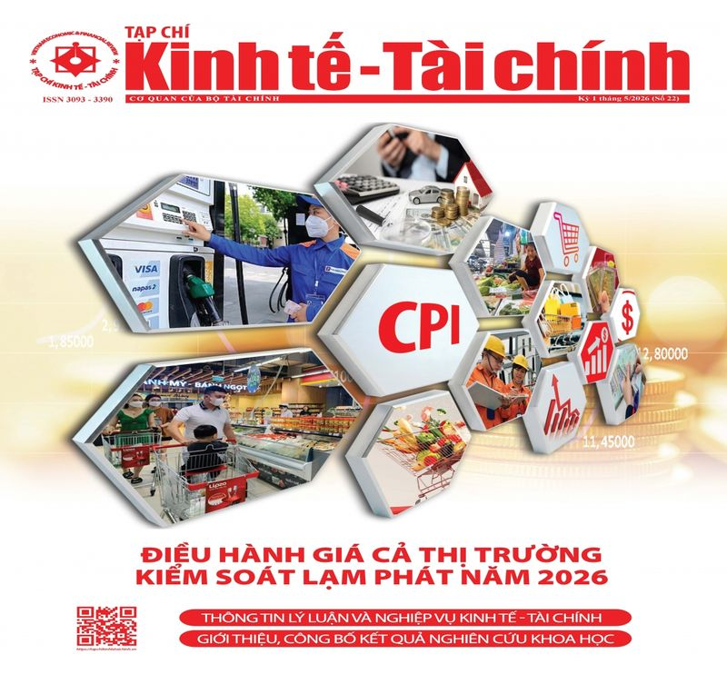
Tạp chí Kinh tế Tài chính kỳ 1 tháng 5/2026 🔗 MOI

Góc chuyên gia & nhà quản lý 🔗 MOI
Phát triển khoa học công nghệ, đổi mới sáng tạo và chuyển đổi số đóng vai trò quan trọng để nước ta chuyển đổi mô hình tăng trưởng và đạt mục tiêu tăng trưởng 2 con số. Chính vì vậy, việc phát huy ngu

Bảo vệ nhà đầu tư trước “cơn sốt” tài sản mã hóa 🔗 MOI
Chứng khoán Trong bối cảnh Việt Nam đang từng bước xây dựng khung pháp lý và chuẩn bị thí điểm thị trường tài sản mã hóa theo Nghị quyết số 05/2025/NQ-CP của Chính phủ, bài toán về an toàn hệ thống, m

Kỷ niệm 51 năm Ngày Giải phóng miền Nam, thống nhất đất nước: Tự chủ chiến lược, kiến tạo thịnh vượng 🔗 MOI
Kinh tế Trong bối cảnh cạnh tranh thu hút đầu tư công nghệ ngày càng quyết liệt, Việt Nam đang chủ động mở cánh cửa ra thế giới để đón các “đại bàng công nghệ”, coi đây là động lực quan trọng để chuyể

Hoạt động của Lãnh đạo Bộ Tài chính 🔗 MOI
Phát triển khoa học công nghệ, đổi mới sáng tạo và chuyển đổi số đóng vai trò quan trọng để nước ta chuyển đổi mô hình tăng trưởng và đạt mục tiêu tăng trưởng 2 con số. Chính vì vậy, việc phát huy ngu
Diễn đàn bảo mật Vietnam Security Summit 2026 tổ chức tại Hà Nội 🔗 MOI
Ngày 22/5, Hiệp hội An ninh mạng quốc gia phối hợp với IEC Group tổ chức diễn đàn và triển lãm quốc tế Vietnam Security Summit 2026. Với chủ đề "Bảo vệ tương lai số trong thế giới hậu lượng tử và trí
Việt Nam lên tiếng về cáo buộc của Mỹ đối với Đại tướng Raúl Castro 🔗 MOI
Việt Nam quan ngại sâu sắc về biện pháp tư pháp của Bộ Tư pháp Mỹ ban hành cáo trạng hình sự đối với nguyên Bí thư thứ nhất Đảng Cộng sản Cuba, nguyên Chủ tịch Hội đồng Bộ trưởng nước Cộng hòa Cuba Ra

Nước CHXHCN Việt Nam 🔗 MOI
© Cổng Thông tin điện tử Chính phủ Tổng Giám đốc: Nguyễn Hồng Sâm Trụ sở: 16 Lê Hồng Phong - Ba Đình - Hà Nội. Điện thoại: Văn phòng: 080 43162; Fax: 080.48924 Email: thongtinchinhphu@chinhphu.vn Bản
Vụ UAV tấn công trường học ở Lugansk: Ông Putin cáo buộc do Ukraine làm, tuyên bố sẽ đáp trả 🔗 MOI
(PLO)- Tổng thống Nga Vladimir Putin cho biết vụ tấn công bằng bằng máy bay không người lái (UAV) vào một trường cao đẳng và khu ký túc xá sinh viên tại TP Starobelsk (thuộc Lugansk) đã khiến 6 người
Khoảnh khắc UAV cảm tử Lancet tiêu diệt xuồng không người lái Ukraine ở Biển Đen 🔗 MOI
Video: Bộ Quốc phòng Nga Bộ Quốc phòng Nga mới đây đã công bố đoạn video quay cảnh UAV Lancet thuộc Lữ đoàn “Varyag” của nước này săn đuổi USV cảm tử của quân Ukraine đang di chuyển đến bán đảo Crưm.
Mỹ nam Việt tuổi 30 lên chức ông chủ, tiết lộ đời thường 'tăng động' của Ngọc Trinh 🔗 MOI
Lên chức ông chủ ở tuổi 30 - Suốt thời gian vắng bóng, nghe nói anh mở đến 4 club. Thu nhập từ kinh doanh hẳn phải cao hơn đóng phim nhiều nhỉ? Tôi muốn tạo ra không gian để những người có cùng sở thí
Báo động bồi lấp cửa biển Thuận An 🔗 MOI
Vào tháng 8-2024, tuyến luồng hàng hải Thuận An từng được nạo vét đạt độ sâu chuẩn tắc 4,5 m theo Quyết định 1671 của Bộ Giao thông Vận tải (nay là Bộ Xây dựng) về kế hoạch bảo trì công trình hàng hải
Đường đua phòng vé hè: Đa sắc màu giải trí 🔗 MOI
Mùa hè 2026 được dự báo sôi động với hàng loạt tác phẩm điện ảnh giải trí dành cho nhiều nhóm khán giả. Từ phim hài, phiêu lưu đến hoạt hình gia đình, đường đua phòng vé năm nay quy tụ nhiều cái tên đ
Đồng Nai: Nơi có hạt điều 'ngon nhất thế giới' 🔗 MOI
Từ cây "xóa đói giảm nghèo" đến thương hiệu toàn cầu Cây điều (hay còn gọi là đào lộn hột) có nguồn gốc từ Brazil, được du nhập vào miền Nam Việt Nam từ thế kỷ XVIII. Khi bén rễ tại vùng Đồng Nai, loạ
Theo Tổng Giám đốc MoneyGain, “thị trường tăng nhưng tài khoản không tăng” là dấu hiệu điển hình của một thị trường phân hóa mạnh. 🔗 MOI
TIN MỚI “VN-Index tăng mạnh, nhưng không phải danh mục nào cũng vui. Đó là cảm giác rất thật của nhiều nhà đầu tư cá nhân trong 3 tháng gần đây ”, bà Nguyễn Thị Bình Minh, Tổng Giám đốc MoneyGain , nh
Hơn 16.000 tỷ đồng xây Vành đai 4 TP HCM qua Đồng Nai 🔗 MOI
Chủ trương đầu tư Dự án thành phần 2-2 thuộc tuyến Vành đai 4 TP HCM theo phương thức đối tác công tư (PPP), được UBND TP Đồng Nai phê duyệt ngày 22/5. Tuyến đường có điểm đầu tại cầu Thủ Biên, kết nố
Tin tức tối 22-5: Bắt quả tang cán bộ thuế nhận tiền của doanh nghiệp 🔗 MOI
Gửi bình luận Bình luận ( 0 ) Hiện chưa có bình luận nào, hãy là người đầu tiên bình luận Xem thêm bình luận
Đường 20 tỉ đồng nát bươm sau vài tháng đưa vào sử dụng 🔗 MOI
Hư hỏng nặng nề trên đường Gia Huynh - Đông Hà, tỉnh Lâm Đồng (vùng Bình Thuận cũ) - Ảnh: ĐỨC TRONG Đường Gia Huynh - Đông Hà do UBND huyện Tánh Linh, Bình Thuận cũ làm chủ đầu tư. Đây là tuyến đường
TP.HCM kiểm tra, xử lý trường hợp thông đồng, tiêu cực trong đấu giá 🔗 MOI
Các nhà đầu tư đấu giá các lô đất ở Thủ Thiêm năm 2021 - Ảnh: NHẬT THỊNH Để tiếp tục nâng cao hiệu lực, hiệu quả của công tác quản lý nhà nước đối với hoạt động đấu giá tài sản, bảo đảm công khai, min

Huy động nguồn lực cho tăng trưởng xanh 🔗 MOI
Pháp luật Bài viết phân tích tiềm năng, thực trạng và định hướng phát triển các mô hình du lịch biển tại Việt Nam nhằm hướng tới một nền kinh tế biển xanh, bền vững. Với đường bờ biển dài hơn 3.260 km

Ngành vận tải biển quý 1/2026: Hầu hết tăng trưởng, Vinaship lãi đột biến nhờ bán tàu 🔗 MOI
Quý 1/2026, nhiều doanh nghiệp vận tải biển ghi nhận tăng trưởng cả về doanh thu và lợi nhuận, đặc biệt Vinaship dù doanh thu giảm nhưng vẫn báo lãi đột biến nhờ khoản thu nhập từ thanh lý tàu.
Vietcombank lên kế hoạch phát hành 10.000 tỷ đồng trái phiếu trong năm 2026 🔗 MOI
Vietcombank dự kiến chào bán tối đa 30 đợt trái phiếu nhằm bổ sung vốn cấp 2, hỗ trợ mở rộng dư địa tăng trưởng và đáp ứng các yêu cầu an toàn vốn. Ảnh minh hoạ. Ngân hàng TMCP Ngoại thương Việt Nam (
Kết quả bóng đá hôm nay 23/5: Xác định đội bóng vô địch U17 châu Á 🔗 MOI
Kết quả bóng đá hôm nay NGÀY GIỜ TRẬN ĐẤU TRỰC TIẾP CHUNG KẾT U17 CHÂU Á 23/05 00:00 U17 Nhật Bản 3-2 U17 Trung Quốc TV360 CHUNG KẾT CÚP QG ĐỨC 2025/26 24/05 01:00 Bayern Munich - Stuttgart VĐQG TÂY B
Đi bộ mang tạ tay có giúp đốt nhiều calo hơn không? 🔗 MOI
Khi đi bộ bình thường, cơ thể chủ yếu sử dụng cơ chân, cơ hông và nhóm cơ cốt lõi như bụng, lưng, hông để duy trì chuyển động. Nếu cầm thêm tạ tay, các cơ ở vai, cánh tay và phần thân trên phải hoạt đ

Xoắn dây tinh và thời gian vàng cấp cứu 🔗 MOI

Bộ Tài chính đồng hành cùng doanh nghiệp nhỏ và vừa trên hành trình chuyển đổi kép 🔗 MOI
Chuyển đổi số Trong bối cảnh tiêu chuẩn ESG, yêu cầu Net Zero và sức ép cạnh tranh toàn cầu ngày càng gia tăng, phần lớn doanh nghiệp Việt Nam, đặc biệt là doanh nghiệp nhỏ và vừa đang đối mặt với kho
Thành lập Hội Doanh nghiệp phường Tân Hưng TP.HCM 🔗 MOI
Ông Dương Công Thuyên - Chủ tịch Hội Doanh nghiệp phường Tân Hưng - phát biểu tại đại hội - Ảnh: TRƯƠNG LINH Việc thành lập hội được đánh giá là cần thiết trong bối cảnh số lượng doanh nghiệp nhỏ và v
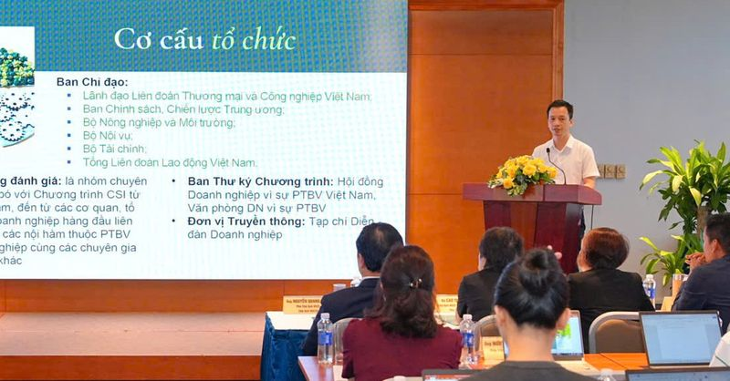
Kéo doanh nghiệp nhỏ gia nhập 'sân chơi' phát triển bền vững 🔗 MOI
Ban Thư ký chương trình giới thiệu các thông tin cập nhật về Chương trình CSI 2026 - Ảnh: BTC Ngày 22-5, Liên đoàn Thương mại và Công nghiệp Việt Nam (VCCI), với hạt nhân là Hội đồ
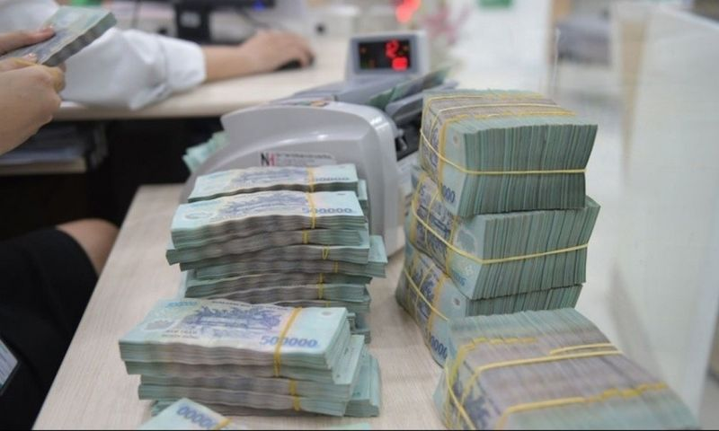
Doanh nghiệp tăng tốc phát hành trái phiếu 🔗 MOI
Theo VBMA, giá trị trái phiếu doanh nghiệp phát hành tháng 4/2026 đạt hơn 36,2 nghìn tỷ đồng, nâng tổng giá trị phát hành trên thị trường 4 tháng đầu năm lên khoảng 77,8 nghìn tỷ đồng. Theo dữ liệu H
Chủ tịch CenLand: 'Tôi rất buồn vì cổ phiếu không tăng giá' 🔗 MOI
Chủ tịch CenLand Nguyễn Trung Vũ bày tỏ “rất buồn” khi cổ phiếu CRE không tăng giá trong thời gian qua, song ông mong cổ đông hãy kiên nhẫn. Chủ tịch CenLand Nguyễn Trung Vũ chia sẻ tại đại hội. Ảnh:
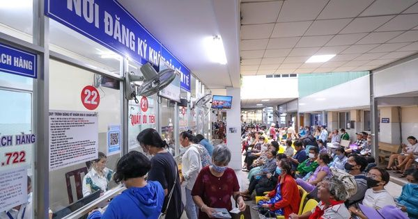
Giảm áp lực từ thuế thu nhập cá nhân 🔗 MOI
Bộ Tài chính vừa trình Chính phủ dự thảo nghị định quy định một số điều của Luật Thuế thu nhập cá nhân. Điểm mới đáng chú ý tại dự thảo này là đề xuất bổ sung khoản giảm trừ đối với chi phí y tế và gi
Đột ngột làm sếp ở 4 công ty, bị tạm hoãn xuất cảnh vì dính nợ thuế 🔗 MOI
Bỗng dưng thành giám đốc, người đại diện pháp luật cả loạt công ty Mới đây, anh Nguyễn Bá H. (An Giang) "té ngửa" khi nhận được thông báo tạm hoãn xuất cảnh từ Thuế cơ sở 18 (TPHCM). Văn bản này do cơ

Cho thuê vỉa hè: Không thể vừa muốn văn minh vừa chấp nhận lộn xộn 🔗 MOI
Sau hàng loạt chiến dịch “giành lại vỉa hè cho người đi bộ”, việc quay trở lại cho phép khai thác vỉa hè để kinh doanh, trông giữ xe khiến nhiều người bày tỏ: Nếu không giải quyết tận gốc bài toán gia
Nhà cổ trong diện giải toả của quan tri huyện xưa ở TP HCM 🔗 MOI
Nằm trong con hẻm trên đường Lã Xuân Oai, gần đình Tăng Phú (phường Tăng Nhơn Phú) là căn nhà của viên quan Nguyễn Minh Giác xây dựng khoảng thập niên 1900. Công trình nằm trong khu đất vuông vắn rộng
Lý do có thể khiến trực thăng Mỹ hạ cánh khẩn, kẹt giữa ruộng 🔗 MOI
Trực thăng vũ trang AH-64E Apache Guardian của Mỹ hôm 15/5 hạ cánh khẩn cấp xuống ruộng lúa ở thành phố Pyeongtaek thuộc tỉnh Gyeonggi, cách thủ đô Seoul khoảng 65 km về phía nam. Thiếu tá Eileen Pool
[Video] Tạo thuận lợi cho các tập đoàn công nghệ cao của Hoa Kỳ đầu tư tại Việt Nam 🔗 MOI
Tổng Bí thư, Chủ tịch nước Tô Lâm hoan nghênh chuyến thăm Việt Nam của lãnh đạo tập đoàn Amazon, chúc mừng những thành công gần đây của tập đoàn, đánh giá cao kết quả đầu tư, kinh doanh của Amazon tại
Quýt và cam: Loại nào chứa nhiều vitamin C hơn? 🔗 MOI
Vitamin C là dưỡng chất quan trọng giúp hệ miễn dịch hoạt động hiệu quả, tham gia tạo collagen cho da và mạch máu. Đồng thời, loại vitamin này hoạt động như một chất chống ô xy hóa giúp bảo vệ tế bào,
Sắp mở nút giao cao tốc Biên Hòa - Vũng Tàu, xe không phải chạy vòng 18 km 🔗 MOI
Ngày 22/5, Cục Đường bộ Việt Nam gửi phương án bổ sung cách tính phí trên cao tốc TP HCM - Long Thành - Dầu Giây nhằm phục vụ kết nối với tuyến Biên Hòa - Vũng Tàu tại nút giao Long Thành, Đồng Nai. T
Shanks Tóc Đỏ đã vượt qua Vua hải tặc Roger trong One Piece? 🔗 MOI
Shanks được xem là hải tặc sở hữu Haki mạnh nhất thời đại hiện tại trong One Piece - Ảnh: Toei Sau các trận chiến quy mô lớn ở Wano, những nhân vật quyền lực nhất thế giới One Piece đã chính thức bước

Hiểu đúng thí điểm vùng phát thải thấp từ 1-7: Không cấm hết xe máy xăng như lời đồn 🔗 MOI
Chi tiết khu vực dự kiến thí điểm vùng phát thải thấp tại Hà Nội từ ngày 1-7-2026 - Ảnh: VTV Từ ngày 1-7, Hà Nội bắt đầu triển khai thí điểm vùng phát thải thấp (Low Emission Zone - LEZ) tại 9 phường
Kết luận của Tổng Bí thư, Chủ tịch nước về nhà ở xã hội và định hướng phát triển nhà ở 🔗 MOI
Tổng Bí thư, Chủ tịch nước Tô Lâm phát biểu - Ảnh: TTXVN Tại buổi làm việc với một số cơ quan ngày 19-5 về tình hình triển khai chỉ thị 34 của Ban Bí thư về nhà ở xã hội và định hướng phát triển nhà ở

quản lý ngân sách hiệu quả, phục vụ chính quyền địa phương 2 cấp 🔗 MOI
Tài chính Không chỉ tinh gọn, sắp xếp bộ máy và kịp thời tham mưu, ban hành, triển khai các văn bản hướng dẫn về kế toán phục vụ mô hình chính quyền địa phương 2 cấp, tham gia các đoàn công tác cùng B
Thêm gần 50 văn bản hợp tác giữa các trường đại học Việt Nam và Liên bang Nga 🔗 MOI
Lễ ký quy chế về Trung tâm Pushkin trên cơ sở Phân viện Hà Nội của Viện Tiếng Nga mang tên Pushkin giữa Bộ Giáo dục và Đào tạo Việt Nam và Bộ Khoa học và Giáo dục đại học Liên bang Nga tại hội nghị -
Nghệ sĩ, KOL lệch chuẩn có thể bị hạn chế hoạt động nghệ thuật có thời hạn 🔗 MOI
Ca sĩ Miu Lê bị bắt do liên quan ma túy được nhắc tên tại hội nghị - Ảnh: FBNV Ngày 22-5, tại TP.HCM, Cục Phát thanh, Truyền hình và Thông tin điện tử tổ chức hội nghị phổ biến Bộ quy tắc ứng xử văn h
🔗 MOI
Em "uống xăng" 5%, 10% cồn thì được khen, còn anh thì luôn luôn 0% cồn khi điều khiển em đấy nhé! Người đàn ông bị xe máy 'giáo huấn' về xăng E10 - Tranh: DAD Từ ngày 1-6 xe máy xăng bắt buộc phải có
Lục bình lên đời thành món ngon trong nhà hàng đãi khách 🔗 MOI
Dọc theo những con kênh, sông ở An Giang, lục bình nhiều và nở rộ bông rất đẹp - Ảnh: CHÍ CÔNG Ở miền Tây có hệ thống kênh, sông chằng chịt, trở thành điều kiện thích hợp cho lục bình (hay gọi là bèo
Xác định 5/8 đội vào tứ kết khu vực phía Bắc Giải bóng đá công nhân, viên chức Việt Nam 2026 🔗 MOI
Công đoàn Bắc Ninh 1 không thể đi tiếp dù đánh bại Công đoàn Thanh Hóa (áo hồng) - Ảnh: NAM TRẦN Chiều 22-5, vòng loại khu vực phía Bắc Giải bóng đá công nhân, viên chức 2026 đã tìm ra 5/8 đội bóng và
Madonna đáp trả Charli XCX sau phát ngôn 'nhạc dance đã chết' 🔗 MOI
Madonna (trái) và Charli XCX - Ảnh: FilmMagic, WireImage Phát ngôn này nhanh chóng gây tranh cãi trên mạng xã hội, đặc biệt khi Charli XCX vốn được xem là một trong những nghệ sĩ góp phần hồi sinh văn
Bắt 'thần y dỏm' Nguyễn Tiến Nam chữa bệnh bằng nước ion kiềm, lừa đảo 100 tỉ đồng 🔗 MOI
Công an làm việc, lấy lời khai với nghi phạm Nam - Ảnh: Công an cung cấp Ngày 22-5, Công an TP Hà Nội cho biết đã bắt giữ Nguyễn Tiến Nam (68 tuổi, trú thôn Đìa, xã Bình Minh, Hà Nội) cùng 7 người khá
Khởi tố chủ tài khoản 'Thanh Store' bán giày Nike, Adidas, Converse... giả trên Shopee 🔗 MOI
Lưu Phát Thuận bị khởi tố vì bán giày, dép giả mạo nhãn hiệu nổi tiếng - Ảnh: Công an TP.HCM Ngày 22-5, Cơ quan Cảnh sát điều tra Công an TP.HCM đã khởi tố vụ án, khởi tố bị can đối với Lưu Phát Thuận
Hòa được Thể Công - Viettel, PVF-CAND khiến Đà Nẵng lo lắng 🔗 MOI
Alastair Reynolds (áo xanh) ghi bàn đầu tiên cho PVF-CAND mùa này - Ảnh: MINH ĐỖ Tối 22-5, PVF-CAND đấu với Thể Công - Viettel trên sân Hàng Đẫy. Đội bóng dưới sự dẫn dắt của HLV Trần Tiến Đại thi đấu
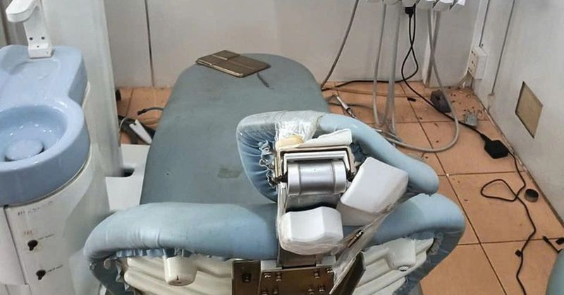
Thanh niên chửi bới, đập phá trang thiết bị phòng khám răng 🔗 MOI
Nghi phạm Đặng Gia Huy sau khi gây ra vụ đập phá trang thiết bị, máy móc tại Trung tâm Y tế Pleiku, Gia Lai - Ảnh: C.Đ. Ngày 22-5, ông Nguyễn Tuấn Quang, Chủ tịch UBND phường Diên Hồng, tỉnh Gia Lai ,
Bãi biển Quảng Nam cũ kín người trong lễ hội ẩm thực, Hội An lung linh đêm giao lưu văn hóa Nhật Bản 🔗 MOI
Bà Trương Thị Hồng Hạnh (giữa) cùng các đầu bếp tại bãi biển Tam Thanh chiều 22-5 - Ảnh: KHẢI ĐĂNG Phát biểu tại lễ khai mạc giao lưu văn hóa Hội An - Nhật Bản ở Vườn tượng An Hội (phố cổ Hội An) tối
Thể Công - Viettel đề nghị VFF, VPF xem xét lại trọng tài 🔗 MOI
HLV Velizar Popov của Thể Công - Viettel "cạn lời" khi xem lại quyết định của tổ trọng tài - Ảnh: MINH ĐỖ Ngay sau khi trận đấu kết thúc với tỉ số hòa 1-1, CLB Thể Công - Viettel làm đơn đề nghị Liên

Đổi mới công tác xây dựng và thi hành pháp luật: Dấu ấn 1 năm thực hiện Nghị quyết số 66-NQ/TW 🔗 MOI
Tài chính Trong tiến trình phát triển đất nước, cải cách thể chế luôn được xác định là khâu đột phá để khơi thông nguồn lực và nâng cao năng lực cạnh tranh quốc gia. Trên nền tảng những chuyển động mạ

nhà đất công đôi dư 🔗 MOI
Tài chính Đằng sau hàng chục nghìn cơ sở nhà, đất công chưa được xử lý dứt điểm không chỉ là câu chuyện thủ tục hay hồ sơ pháp lý, mà còn là tâm lý e ngại trách nhiệm trong quá trình thực thi. Mệnh lệ
Chân dung doanh nghiệp 🔗 MOI
Becamex ghi nhận doanh thu 1.106 tỷ đồng trong quý 1, giảm 40% so với cùng kỳ, lợi nhuận sau thuế còn 288 tỷ đồng – mức thấp nhất kể từ đầu năm 2024.

Chính phủ với công dân 🔗 MOI
22/05/2026 (Chinhphu.vn) - Bà Nguyễn Thị Việt Nga (Huế) là Giám đốc một doanh nghiệp sản xuất. Bà được biết, vừa qua Bộ Công Thương đã ban hành quyết định điều... 22/05/2026 (Chinhphu.vn) - Sở của bà
Kết luận tại buổi làm việc về nhà ở xã hội và định hướng phát triển nhà ở 🔗 MOI
Tham dự buổi làm việc có Thủ tướng Lê Minh Hưng, các Ủy viên Bộ Chính trị, Ủy viên T.Ư Đảng, lãnh đạo một số cơ quan, ban, bộ, ngành T.Ư. Sau khi nghe báo cáo của Đảng ủy Chính phủ, ý kiến đóng góp củ
Nhìn lại những tác phẩm dành cho thiếu nhi của cố Nghệ sỹ Nhân dân Ngô Mạnh Lân 🔗 MOI
Facebook Twitter Lưu bài viết Bản in Copy link Từ ngày 22 đến 24/5, triển lãm “Thế giới tuổi thơ qua các tác phẩm của cố Nghệ sỹ Nhân dân Ngô Mạnh Lân” diễn ra tại Bảo tàng Mỹ thuật Việt Nam nhằm tôn
🔗 MOI
Tại Hà Nội , ngay từ sáng sớm, hàng nghìn thí sinh đã có mặt tại Trường THPT Chuyên Khoa học Tự nhiên và Trường THPT Chuyên Khoa học Xã hội và Nhân văn. Đây là 2 trường chuyên tổ chức thi lớp 10 sớm n
VTV Bình Điền Long An quyết giữ ngôi hậu 🔗 MOI
Sở hữu lực lượng đồng đều Cuộc chiến ngôi hậu giữa Giang Tô và VTV Bình Điền Long An là một phần dự báo của giới chuyên môn, cho dù thất bại chóng vánh của Hà Nội Tasco Auto ở bán kết thực sự gây sốc,
Bác sĩ gợi ý những loại cá giàu omega-3 cho người lớn tuổi 🔗 MOI
Cô T.T.H (67 tuổi, ở TP.HCM) cho biết, từ khi bị tăng huyết áp , cô và một số thành viên trong gia đình không dám ăn mỡ vì nghe nói sẽ làm “mỡ trong máu, tăng cholesterol”, không tốt cho người có tuổi
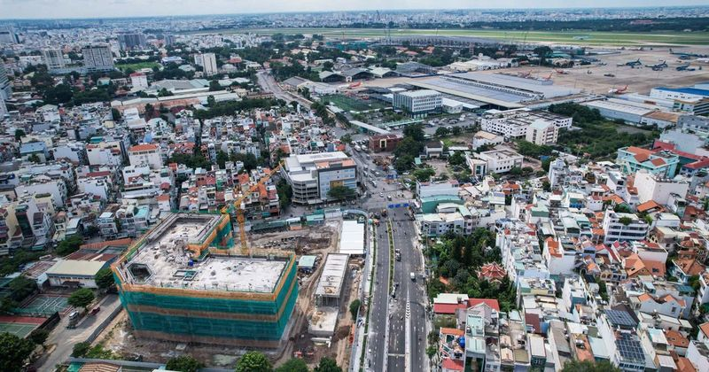
TP.HCM sẽ được phân quyền mạnh, thực chất 🔗 MOI
Ngày 22.5, UBND TP.HCM tổ chức hội thảo tham vấn ý kiến chuyên gia, nhà khoa học, trí thức tiêu biểu về dự thảo luật Đô thị đặc biệt . Đ Ề XUẤT GIAO GẦN 300 THẨM QUYỀN VỀ TP.HCM Phát biểu khai mạc, ôn

Tử vi ngày 23 tháng 5: Con giáp nào may mắn hôm nay? 🔗 MOI
Tuổi Tí trong tử vi ngày 23 tháng 5 có thể nhận ra mình đang dành quá nhiều thời gian cho những việc không thật sự cần thiết. Khi biết ưu tiên đúng, bạn sẽ thấy mọi thứ nhẹ nhàng hơn hẳn. Tài lộc ổn đ
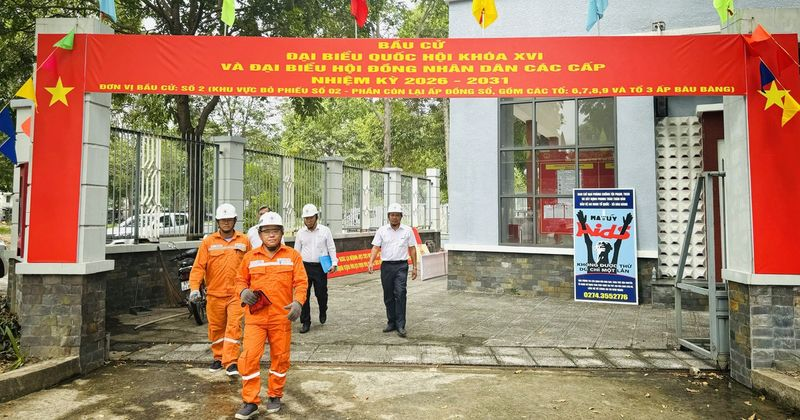
'Không làm những điều lớn lao, nhưng chúng tôi hiểu rõ trách nhiệm của mình' 🔗 MOI
Tôi là Nguyễn Long Hùng, công tác tại Công ty Điện lực Đất Đỏ ( Tổng công ty Điện lực TP.HCM ). Với tôi, công việc không chỉ đơn thuần là xử lý sự cố điện, mà là giữ cho dòng điện luôn ổn định, phục v
Cây cầu dài nhất Đông Nam Á thuộc về nước nào? 🔗 MOI
1. Cây cầu dài nhất Đông Nam Á nằm ở quốc gia nào? Malaysia 0% Singapore 0% Brunei 0% Chính xác Theo Hiệp hội sắt và thép Đông Nam Á, cây cầu dài nhất khu vực hiện nay là Sultan Haji Omar Ali Saifuddi
Bảng xếp hạng V-League 2025/26 - Vòng 24 mới nhất 🔗 MOI
Bảng xếp hạng V-League 1 mùa giải 2025/26 mới nhất Lịch thi đấu vòng 24 V-League 2025/26 mới nhất Lịch thi đấu V-League 2025/26 - Cung cấp lịch thi đấu bóng đá vòng 24 V-League 1 mùa giải 2025/26 nhan
Thể Công Viettel thoát thua PVF-CAND tại Hàng Đẫy 🔗 MOI
Thể Công Viettel trải qua trận đấu đầy khó khăn khi tiếp đón PVF-CAND ở vòng 24 V.League 2025/26. Dù được chơi trên sân Hàng Đẫy và kiểm soát bóng nhiều hơn, đội bóng áo lính vẫn phải chật vật mới có
Lịch âm hôm nay: Ngày 23.5 là ngày gì mà người Việt mong may mắn gõ cửa? 🔗 MOI
Dương lịch hôm nay là thứ bảy, đánh dấu năm 2026 trải qua ngày thứ 142. Theo lịch âm hôm nay 23.5 là ngày 7 tháng 4, theo cách gọi can chi là ngày Đinh Dậu, tháng Quý Tỵ, năm Bính Ngọ. Ngày 23.5 hôm n
Trinh sát đặc nhiệm đổ bộ đường không 🔗 MOI
Biên đội trực thăng Mi-8 và Mi-171 bay treo thả lực lượng đổ bộ ẢNH: ĐỘC LẬP Trong 2 tuần qua, Bộ Quốc phòng đã triển khai đợt thực hành, huấn luyện đổ bộ đường không đối với lực lượng trinh sát đặc n
Tin vui cho sinh viên học khoa học cơ bản, công nghệ chiến lược 🔗 MOI
Sinh viên Đại học Quốc gia Hà Nội - Ảnh: VNU Chính phủ ban hành Nghị định số 179 quy định chính sách học bổng cho người học các ngành khoa học cơ bản, kỹ thuật then chốt và công nghệ chiến lược. Tiêu

Google Finance tích hợp AI: Người dùng phổ thông cũng có thể đầu tư như chuyên gia 🔗 MOI
Nhà đầu tư nghiệp dư vẫn có thể hiểu thị trường nhờ công cụ AI mới của Google. Google đang thử nghiệm phiên bản Google Finance tích hợp trí tuệ nhân tạo (AI) tại Israel, đánh dấu bước đi mới trong tha
Số người thắt chặt chi tiêu tăng, 92% 'thượng đế' Việt vẫn sẵn sàng thử nghiệm sản phẩm mới 🔗 MOI
Khách mua sắm hàng giảm giá tại trung tâm thương mại Vincom, đường Đồng Khởi, TP.HCM - Ảnh: HỮU HẠNH Người tiêu dùng Việt ưu tiên các mặt hàng thiết yếu, hạn chế mua sắm xa xỉ và tăng cường nấu ăn tại

Tham vấn chính sách 🔗 MOI
22/05/2026 (Chinhphu.vn) - Bộ Tài chính đang dự thảo Luật Hỗ trợ doanh nghiệp nhỏ và vừa (sửa đổi). Trong đó, Bộ đề xuất sửa tiêu chí xác định doanh nghiệp nhỏ... 22/05/2026 (Chinhphu.vn) - Bộ Tài chí

"Bộ lọc" thi đua trong doanh nghiệp 🔗 MOI
Lâu nay, nhắc đến "thi đua", không ít người lao động vẫn mang tâm lý coi đó là một hoạt động bề nổi. Những phong trào được phát động rầm rộ nhưng lại thiếu vắng sự đo lường cụ thể; những phần thưởng m
Hóa chất Đức Giang (DGC) phát thông báo quan trọng về cổ phiếu 🔗 MOI
TIN MỚI CTCP Tập đoàn Hóa chất Đức Giang (mã: DGC) vừa công bố thông tin giải trình biện pháp và lộ trình khắc phục tình trạng chứng khoán bị hạn chế giao dịch. Trước đó, HOSE đã quyết định đưa cổ phi
Báo in ngày 23-5: Giảm áp lực từ thuế thu nhập cá nhân 🔗 MOI
PHÂN QUYỀN MẠNH CHO ĐÔ THỊ ĐẶC BIỆT TP HCM (trang 5) Với 9 chương và 45 điều, dự thảo dự án Luật Đô thị đặc biệt được đánh giá có nhiều cơ chế mang tính đột phá giúp TP HCM phát triển như kỳ vọng GIẢM

Công cụ AI liên quan Anthropic tự ý xóa sạch dữ liệu của một doanh nghiệp trong 9 giây 🔗 MOI
Hành động phá hoại của công cụ lập trình AI đã khiến khách hàng của Công ty PocketOS rơi vào tình thế khó khăn - Ảnh TED HSU Báo Guardian đưa tin một công cụ lập trình vận hành bằng trí tuệ nhân tạo (
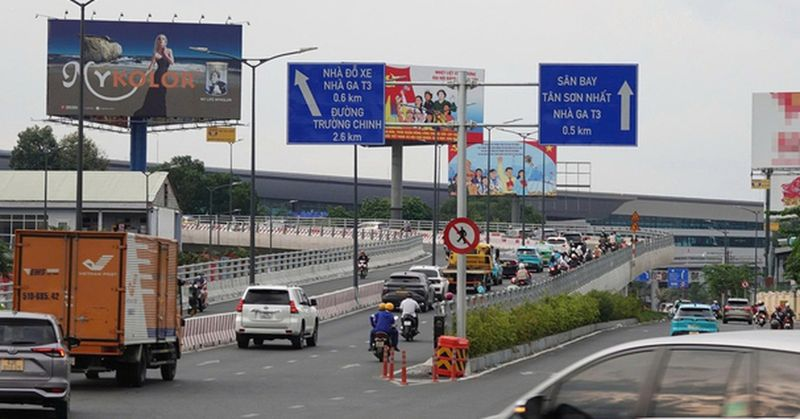
TP.HCM phê duyệt đề cương lập Quy hoạch quảng cáo ngoài trời đến năm 2035 🔗 MOI
Nhiều bảng quảng cáo xen lẫn tầm nhìn của biển báo giao thông, gây mất tập trung tại cầu vượt vào nhà ga T3, sân bay Tân Sơn Nhất - Ảnh: T.T.D. Theo đó, UBND TP.HCM giao Sở Văn hóa và Thể thao phối hợ
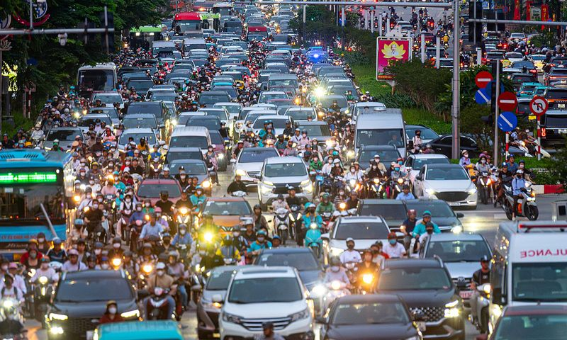
Hiện trạng tuyến đường dự kiến phân làn đảo chiều ở Hà Nội 🔗 MOI
Đường Nguyễn Chí Thanh dài khoảng 1,8 km, có 10 làn xe cơ giới và xe thô sơ, kết nối với nhiều nút giao lớn của Hà Nội. Trước tình trạng ùn tắc kéo dài theo một chiều vào giờ cao điểm, Cục Cảnh sát gi
Oral sex an toàn hơn quan hệ trực tiếp? 🔗 MOI
Trả lời: Nhiều người cho rằng quan hệ bằng miệng (oral sex) "an toàn hơn" nhưng thực tế vẫn có thể lây khá nhiều bệnh tình dục. Chẳng hạn, bệnh lậu ở nam có thời gian ủ bệnh ngắn, từ 2 đến 7 ngày. Dấu
[Video] Cháy xưởng mút xốp, cột khói đen cao hàng chục mét 🔗 MOI
Theo thông tin ban đầu, khoảng 13 giờ 30 phút, người dân phát hiện lửa bùng phát dữ dội từ khu nhà xưởng. Do bên trong chứa nhiều vật liệu dễ cháy, ngọn lửa nhanh chóng lan rộng, kèm theo khói đen dày
'The Odyssey' và loạt bom tấn quốc tế đổ bộ phòng vé dịp hè 🔗 MOI
Mùa phim hè năm nay quy tụ nhiều tác phẩm quốc tế được mong đợi, đa dạng thể loại như hành động, hoạt hình, giật gân. Theo giới chuyên môn, các tác phẩm góp phần hâm nóng phòng vé Việt, hứa hẹn sự cạn
Hà Nội Tasco Auto giành hạng ba Cúp bóng chuyền VTV9 - Bình Điền 2026 🔗 MOI
Ở trận tranh hạng ba Cúp VTV9 - Bình Điền 2026, LPBank Ninh Bình khởi đầu đầy quyết tâm và tạo ra nhiều khó khăn cho đối thủ. Tuy nhiên, Hà Nội Tasco Auto đã thể hiện bản lĩnh đúng lúc để lội ngược dò
Đông Hùng: 'Tôi không còn đi hát vì cơm áo gạo tiền' 🔗 MOI
Ca sĩ tham gia show âm nhạc Anh trai vượt ngàn chông gai mùa hai. Đông Hùng, 33 tuổi, từng tham gia cuộc thi Sao Mai điểm hẹn 2012, Vietnam Idol 2014 , được biết đến với chất giọng khỏe khoắn. Dịp này
Ba lý do chia sẻ dữ liệu camera an ninh của cá nhân cho công an xã 🔗 MOI
Quyết định 502 được Thủ tướng ban hành ngày 28/3 đã phê duyệt Phương án kết nối, chia sẻ dữ liệu giữa các hệ thống camera giám sát an ninh, trật tự, xử lý vi phạm và điều hành giao thông với Cơ sở dữ
‘Lương Sơn Bá’ Hà Nhuận Đông lấy vợ kém 8 tuổi, tuổi 51 vẫn được săn đón 🔗 MOI
Theo Mirror Media , Hà Nhuận Đông trở thành cái tên được chú ý thời gian qua. Nguồn cơn xuất phát từ bộ phim Trục Ngọc của sao nam Trương Lăng Hách đóng vai võ tướng. Diễn viên gây tranh cãi với hình

Coi chừng nhiễm liên cầu lợn vì thói quen ăn tiết canh, thịt tái 🔗 MOI

Làm thế nào để lên thực đơn dinh dưỡng cho gia đình nhiều thế hệ? 🔗 MOI

Khám tiền hôn nhân ở nam và nữ khác nhau như thế nào? 🔗 MOI

Sử dụng thuốc tăng cường sinh lý để kéo dài 'cuộc yêu', có nên không? 🔗 MOI

Chồng không tinh trùng nhưng vợ vẫn sinh được con 'chính chủ', vì sao? 🔗 MOI

Viêm da tiết bã ở trẻ em khác gì ở người lớn? 🔗 MOI

Xóa xăm có xóa được triệt để hay không? 🔗 MOI

6 dấu hiệu thầm lặng cảnh báo đột quỵ trước 1 tháng 🔗 MOI
Theo The Times of India, 6 dấu hiệu của cơ thể cảnh báo trước 1 tháng khi đột quỵ sắp xảy ra: 1. Chóng mặt bất thường Cảm giác chóng mặt thường được cho là do bỏ bữa, mất nước hoặc đứng dậy quá nhanh.

Hệ thống Bảo hiểm xã hội Việt Nam: Tăng tốc thực hiện các chỉ tiêu nhiệm vụ năm 2025 🔗 MOI
Theo Bảo hiểm xã hội (BHXH) TP. Hồ Chí Minh, mặc dù năm 2025 gặp một số khó khăn, tuy nhiên tập thể cán bộ viên chức, người lao động BHXH TP. Hồ Chí Minh quyết tâm hoàn thành vượt chỉ tiêu giao, với s
🔗 MOI
Mạng xã hội vừa được dịp nháo nhào, khi 'ông hoàng nhạc sến' Ngọc Sơn quyết định mang cả danh dự lẫn gia tài ra cá cược với tin đồn dính dáng đến 'nàng tiên nâu'. Ngọc Sơn chủ động đi xét nghiệm ma tú
Một thị trưởng ở Peru bị bắn chết khi đang trên đường đi làm 🔗 MOI
Bản tin 30s Nóng: Bóc gỡ đường dây ma túy hơn 140 người; Cưỡng chế biệt thự trắng nổi tiếng Phú Quốc 🔗 MOI
Thủ môn Công đoàn Thanh Hóa tạo siêu phẩm khó tin 🔗 MOI
Thủ môn Trần Quang Song của Công đoàn Thanh Hóa ghi siêu phẩm từ cuối sân - Nguồn: BTC Chiều 22-5, Công đoàn Thanh Hóa phải nhận trận thua 4-6 trước Công đoàn Bắc Ninh 1 ở lượt cuối bảng C vòng loại p
Phó chủ tịch nước Võ Thị Ánh Xuân thăm và trao quà cho bệnh nhi tại Bệnh viện Nhi đồng 1 🔗 MOI
Phó chủ tịch nước Võ Thị Ánh Xuân ân cần thăm hỏi tình hình sức khỏe của các bệnh nhi - Ảnh: NGỌC LÂN Cùng tham dự chương trình có ông Nguyễn Tri Thức, Thứ trưởng Bộ Y tế ; ông Đinh Tiến Hải, Giám đốc
Đảng ủy các cơ quan Đảng TP.HCM thi báo cáo viên giỏi, tìm người 'vừa hồng, vừa chuyên' 🔗 MOI
Ban tổ chức tặng quà chúc mừng các thí sinh tham gia hội thi - Ảnh: KỲ PHONG Hội thi thu hút 28 thí sinh tham dự, là những báo cáo viên, tuyên truyền viên xuất sắc đại diện cho Học viện Cán bộ TP.HCM,
Bí thư Tỉnh Đoàn Nghệ An làm Bí thư Đảng ủy xã Kim Liên 🔗 MOI
Ông Hoàng Nghĩa Hiếu - Phó bí thư thường trực Tỉnh ủy, Chủ tịch Hội đồng nhân dân tỉnh Nghệ An - tặng hoa và trao quyết định cho 4 cán bộ được điều động, bổ nhiệm - Ảnh: DOÃN HÒA Chiều 22-5, ông Hoàng
Người xả rác bừa bãi ở Đà Nẵng vừa bị xử phạt, vừa bị nêu tên trên loa 🔗 MOI
Khu vực dưới chân cầu Thuận Phước thường xuyên trở thành điểm tập kết rác thải - Ảnh: ĐOÀN CƯỜNG Ngày 22-5, UBND thành phố Đà Nẵng đã tổ chức cuộc họp chấn chỉnh công tác thu gom, vận chuyển, xử lý rá
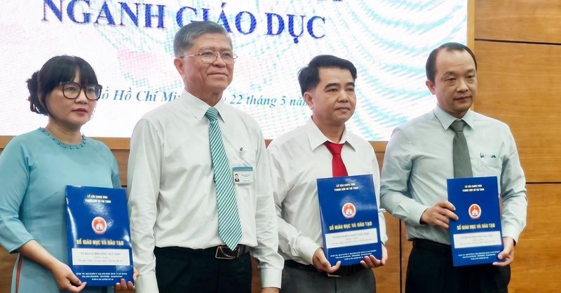
TP.HCM bổ nhiệm hiệu trưởng 3 trường THPT mới thành lập 🔗 MOI
Giám đốc Sở Giáo dục và Đào tạo TP.HCM Nguyễn Văn Hiếu trao quyết định bổ nhiệm, điều động hiệu trưởng ba trường THPT mới (từ phải sang): ông Phạm Phương Bình, ông Lương Văn Minh, bà Nguyễn Thị Túy Ph
HLV Arbeloa xác nhận chia tay Real Madrid, 'người đặc biệt' Mourinho có thể sẽ trở lại 🔗 MOI
HLV Alvaro Arbeloa chính thức xác nhận chia tay Real Madrid - Ảnh: Reuters Từ dẫn dắt Real Madrid B, Alvaro Arbeloa (43 tuổi) được thăng chức làm huấn luyện viên trưởng Real Madrid vào tháng 1, thay t
Doraemon Movie 45 vượt 50 tỉ đồng trong ngày đầu khởi chiếu 🔗 MOI
Doraemon Movie 45 chạm mốc 54 tỉ đồng trong ngày đầu khởi chiếu - Ảnh: Toho Sau nhiều ngày chờ đợi, Doraemon: Nobita và lâu đài dưới đáy biển ( Doraemon Movie 45 ) chính thức ra rạp Việt từ ngày 22-5.
TP.HCM hoàn thành 100% chỉ tiêu giao quân năm 2026, cao nhất cả nước 🔗 MOI
Thiếu tướng Vũ Văn Điền - Ủy viên Ban Thường vụ Thành ủy, Tư lệnh Bộ Tư lệnh, Phó chủ tịch thường trực Hội đồng Nghĩa vụ quân sự TP.HCM điều hành hội nghị - Ảnh: KỲ PHONG Chiều 22-5, UBND TP.HCM tổ ch
HLV Guardiola nói 'không có gì là vĩnh cửu' sau tuyên bố rời Man City 🔗 MOI
HLV Pep Guardiola sẽ chia tay Man City sau 10 năm gắn bó - Ảnh: Man City FC Trận Man City gặp Aston Villa ngày 24-5 là trận đấu cuối cùng của HLV Guardiola tại sân Etihad. Ông sẽ ra đi với tư cách là
Nhạc sĩ Nguyễn Minh Cường bất ngờ chọn Quang Trung vào Music Diary 8 🔗 MOI
Nguyễn Minh Cường mời Quang Trung vào Music Diary 8 vì chất giọng mềm, cách xử lý tinh tế và cảm giác "giàu chất thơ" mà ca sĩ mang lại - Ảnh: NVCC Điều đáng chú ý là thay vì chọn những gương mặt đang
Studio Ghibli hồi sinh siêu phẩm kinh điển 'Dịch vụ giao hàng của phù thủy Kiki' 🔗 MOI
Dịch vụ giao hàng của phù thủy Kiki được tái chiếu với chất lượng hình ảnh nâng cấp đáng kể - Ảnh: Studio Ghibli Sau thành công của các đợt chiếu lại phim hoạt hình cổ điển trong những năm gần đây, St

Nhật Bản ra mắt 'máy giặt người' trị giá 385.000 USD, làm sạch từ đầu đến chân trong 15 phút 🔗 MOI
Thống đốc Yoshimura Yoshifumi của tỉnh Osaka trải nghiệm máy giặt người Mirai - Ảnh: SISA COMMUNICATION YOUTUBE Theo trang Interesting Engineer ngày 30-11, Công ty Science Inc. của Nhật Bản vừa chính

Hoàn thiện khung khổ pháp lý về tiết kiệm 🔗 MOI
Pháp luật Trong công cuộc phòng, chống lãng phí hiện nay khó có thể tránh khỏi những khó khăn, nguy hiểm, ảnh hưởng tới người đấu tranh chống lãng phí. Do đó, việc bảo vệ người cung cấp thông tin phát

Cải cách tài chính công thúc đẩy tăng trưởng 🔗 MOI
Pháp luật Trong những năm qua, cùng với việc đẩy mạnh tiến trình xây dựng Nhà nước pháp quyền Việt Nam xã hội chủ nghĩa, công tác xây dựng và hoàn thiện hệ thống pháp luật đã đạt được nhiều thành tựu
Phân cấp cho chủ tịch UBND cấp xã ở TP.HCM tiếp nhận, điều động, biệt phái, kỷ luật công chức 🔗 MOI
Theo phân cấp, Chủ tịch UBND cấp xã ở TP.HCM có thẩm quyền tiếp nhận, điều động, biệt phái, kỷ luật công chức thuộc quyền - Ảnh: NGỌC KHẢI UBND TP.HCM vừa ban hành quyết định quy định phân cấp tuyển d

CEO có quý lãi cao nhất 3 năm 🔗 MOI
Động lực tăng trưởng lợi nhuận của CEO chủ yếu đến từ việc cải thiện doanh thu, ngoài ra còn được đóng góp bởi lãi thoái vốn đầu tư vào công ty con. Trụ sở CEO Group tại Hà
bảng giá truyền thông 🔗 MOI

Thông cáo báo chí 🔗 MOI
Thông cáo báo chí 22/05/2026 (Chinhphu.vn) - Văn phòng Chính phủ vừa có Thông cáo báo chí chỉ đạo, điều hành của Chính phủ, Thủ tướng Chính phủ ngày 22/5/2026. 21/05/2026 (Chinhphu.vn) - Văn phòng Chí

Chỉ đạo, quyết định của Chính phủ - Thủ tướng Chính phủ 🔗 MOI
22/05/2026 (Chinhphu.vn) - Chính phủ ban hành Nghị định số 179/2026/NĐ-CP ngày 20/5/2026 quy định chính sách học bổng cho người học các ngành khoa học cơ bản,... 22/05/2026 (Chinhphu.vn) - Thủ tướng C
Thảo Cầm Viên mở trại hè: Trẻ làm 'bảo mẫu' sở thú, dắt ngựa lùn đi dạo 🔗 MOI
Mỗi dịp hè, Thảo Cầm Viên lại trở thành một trong những điểm đến đông khách ở TP.HCM. Nhưng năm nay, nơi này không chỉ có thú xem hay trò chơi cuối tuần mà còn mở thêm hàng loạt hoạt động trải nghiệm
Chủ tịch Hà Nội chỉ đạo kiểm tra chợ hoa khủng hoạt động chui tại phường Kiến Hưng 🔗 MOI
Ngày 22/5, UBND TP Hà Nội ban hành công văn số 2208 gửi các đơn vị liên quan về việc kiểm tra, xử lý thông tin báo chí phản ánh. Theo đó, thời gian gần đây, dư luận và các cơ quan báo chí có thông tin
Siết quản lý hội nhóm mạng xã hội: Đừng để Admin phải 'tự bơi' 🔗 MOI
(PLO)- Các quản trị viên mong đợi những công cụ, tiêu chí pháp lý minh bạch và cơ chế phối hợp cụ thể với cơ quan chức năng để quản lý hội nhóm hiệu quả, văn minh hơn. Xoay quanh dự thảo quy định tăng

Bất lực vì mẹ bỏ thuốc ở bệnh viện, tin theo 'bác sĩ mạng' 🔗 MOI
Giấu các con mua thuốc theo "bác sĩ mạng" Những ngày gần đây, chị Vũ Thị Ngoan (Hoàng Liệt, Hà Nội) bất lực vì mẹ bỏ thuốc của bệnh viện để nghe theo một "bác sĩ" trên mạng. Bà đang điều trị tăng huyế
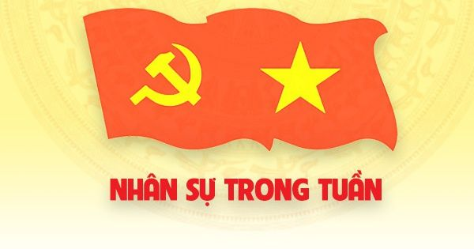
[Infographic] Nhân sự trong tuần: Bổ nhiệm một số cán bộ ở Trung ương 🔗 MOI
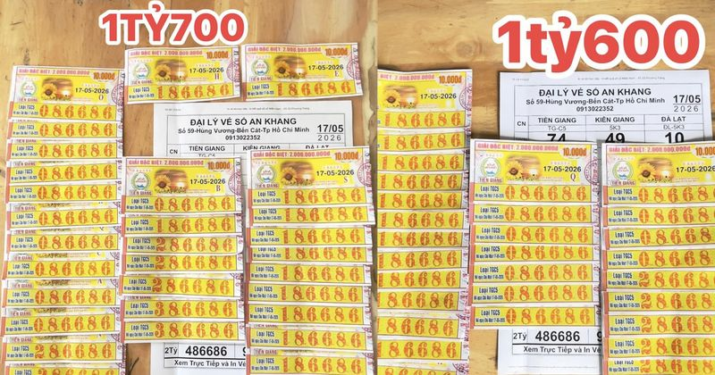
Đại lý TP.HCM bán trúng 7,2 tỉ xổ số miền Nam, 10 người may mắn xuất hiện 🔗 MOI
Đó là chia sẻ của đại lý vé số An Khang ở TP.HCM (Bình Dương cũ) sau khi đã bán trúng 9 cọc vé số giải an ủi xổ số miền Nam gồm 144 tờ cho nhiều khách và bạn hàng, với tổng số tiền trúng số là 7,2 tỉ
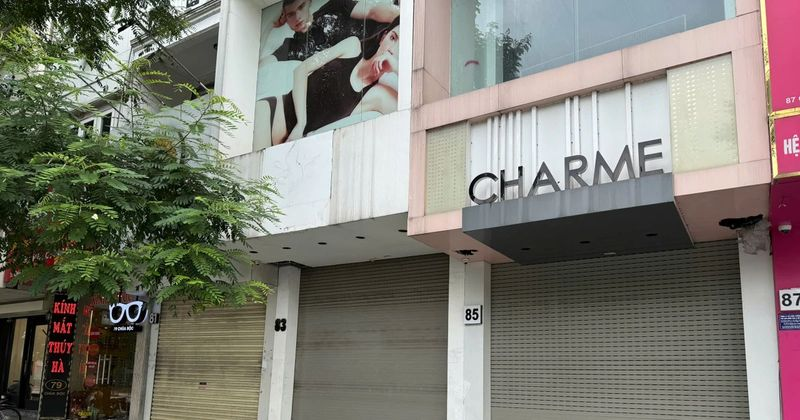
Đằng sau việc ồ ạt trả cửa hàng mặt phố Hà Nội 🔗 MOI
Co kéo để tối ưu vận hành Tại Hà Nội, đi dọc nhiều tuyến phố như Kim Mã, Chùa Bộc, Phạm Ngọc Thạch, Phố Huế… không khó để bắt gặp những tấm biển “ cho thuê mặt bằng ”, “sang nhượng cửa hàng”, “thanh l
Phát hiện rạn san hô tại Tây Australia có khả năng chịu nhiệt khác thường 🔗 MOI
Facebook Twitter Lưu bài viết Bản in Copy link Nghiên cứu của Đại học James Cook (JCU) Australia mới đây cho thấy một quần thể rạn san hô ngoài khơi bang Tây Australia (WA) có khả năng chống chịu đáng
Tiếng chuông leng keng và bộ sưu tập Peugeot độc đáo giữa lòng Hà Nội 🔗 MOI
Facebook Twitter Lưu bài viết Bản in Copy link Sở hữu bộ sưu tập xe đạp Pháp Peugeot đồ sộ được công nhận kỷ lục thế giới, ông Đào Xuân Tình (sinh năm 1959) tâm sự rằng sưu tầm không chỉ là sở hữu đồ
Báo Pháp Luật TP. Hồ Chí Minh 🔗 MOI
TP.HCM mở hướng đi cho người hoạt động không chuyên trách 🔗 MOI
G IỮ LẠI KHOẢNG 1.000 NGƯỜI Những ngày cuối tháng 5.2026, tâm trạng người hoạt động không chuyên trách (NHĐKCT) tại các phường, xã ở TP.HCM khá rối bời bởi họ sẽ chấm dứt hoạt động từ ngày 31.5 theo c

Thí điểm xã, phường xã hội chủ nghĩa: Tránh hình thức, chạy theo danh hiệu 🔗 MOI
Xây dựng xã, phường xã hội chủ nghĩa là một biện pháp hữu hiệu để hiện thực hóa tầm nhìn phát triển Việt Nam đến năm 2045. Văn kiện Đại hội 14 của Đảng xác định mục tiêu đến năm 2045, Việt Nam trở thà
Ly kỳ 'vụ ly hôn 1.200 tỷ đồng' của bác sỹ nha khoa ở TPHCM 🔗 MOI
Vụ án được tòa thụ lý từ tháng 3/2015 nhưng kéo dài suốt 10 năm do các bên nhiều lần thay đổi yêu cầu khởi kiện, phát sinh phản tố và cần thu thập thêm nhiều tài liệu, chứng cứ. Công an xuất hiện tại
Gần 11.000 thí sinh đua vào lớp 10 trường chuyên 🔗 MOI
Kỳ thi của trường chuyên Khoa học Tự nhiên, Khoa học Xã hội và Nhân văn (Đại học Quốc gia Hà Nội) và Phổ thông Năng khiếu (Đại học Quốc gia TP HCM) mở màn cho mùa tuyển sinh lớp 10 trong cả nước. Tất
Tuyển Việt Nam: Đình Bắc bay cao, Xuân Son hãy coi chừng 🔗 MOI
Đình Bắc bay cao Nửa cuối mùa giải 2025/26 đang chứng kiến màn bứt phá cực kỳ ấn tượng, thậm chí được coi… chóng mặt của Đình Bắc khi từ một chân sút phập phù biến thành “sát thủ” thực sự tại V-League
5 thực phẩm tự nhiên chứa độc tố nguy hiểm hơn đồ ăn nhanh 🔗 MOI
Trong cuộc sống hiện đại, người dân ngày càng có ý thức bảo vệ sức khỏe khi dần từ bỏ gà rán cùng đồ uống có đường để chuyển sang các loại thực phẩm nguyên phần, rau hữu cơ, thậm chí tôn sùng quan niệ
Neymar dự World Cup 2026: Chờ đợi "Vũ điệu Samba cuối cùng" 🔗 MOI
Facebook Twitter Lưu bài viết Bản in Copy link World Cup 2026 có thể là "vũ điệu samba cuối cùng" của Neymar. Trong suốt nhiều năm, Neymar luôn là biểu tượng lớn nhất của bóng đá Brazil thế hệ mới.

Mắt mờ, khô mắt có nên dùng thuốc mỡ kháng sinh? 🔗 MOI
Bạn đọc BÙI THỊ DUYÊN (ở Ninh Bình) hỏi: Tôi nay 68 tuổi, gần đây mắt nhìn hơi mờ, đi khám được tư vấn chưa đến mức phải thay thủy tinh thể. Thỉnh thoảng tôi dùng thuốc mỡ tra mắt tetracyclin để giảm
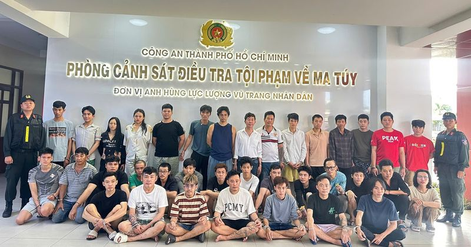
Công an TP.HCM phá loạt án ma túy lớn ngay trong tuần đầu ra quân 🔗 MOI
Từ ngày 16.5, Công an TP.HCM phát lệnh ra quân đồng loạt trên toàn TP.HCM thực hiện chiến dịch cao điểm 45 ngày đêm tổng rà soát, thống kê, phát hiện, đấu tranh, làm sạch địa bàn, tiến tới mục tiêu xâ
TP.HCM: Chủ tịch xã được quyền tiếp nhận người không chuyên trách làm công chức 🔗 MOI
(PLO)- Các sở, ban, ngành TP và Chủ tịch UBND cấp xã quyết định tiếp nhận vào làm công chức đối với người hoạt động không chuyên trách ở cấp xã vào các vị trí việc làm thuộc thẩm quyền quản lý, sử dụn
Lịch thi đấu V-League rất nóng hôm nay: HAGL trụ hạng nếu thắng Thanh Hóa, Đà Nẵng liệu có thoát đáy? 🔗 MOI
Cuộc đua trụ hạng liên tục đảo chiều Không nhiều người nghĩ PVF-CAND lại khiến Thể Công Viettel vất vả đến vậy bởi sức mạnh và phong độ của đôi bên là rất chênh lệch. Trước cuộc đối đầu trực tiếp, thầ

Google ra mắt Gemma 4, AI chạy offline trên thiết bị cá nhân 🔗 MOI
Gemma 4 chạy trực tiếp trên thiết bị cá nhân - Ảnh: THOMAS FULLER Trong bối cảnh trí tuệ nhân tạo vẫn phụ thuộc vào hạ tầng đám mây, việc một mô hình có thể hoạt động trực tiếp trên thiết bị cá nhân đ

5 ngày đếm ngược đến Triển lãm VietAd 2026 - Hà Nội 🔗 MOI
Triển lãm VietAd 2026 đem đến những trải nghiệm công nghệ cho khách tham quan. - Ảnh: Ban Tổ chức Nơi hội tụ công nghệ số và kết nối toàn cầu Với xu hướng tái cấu trúc mạnh mẽ của các chuỗi cung ứng c

Khi nào bị hủy kết hôn? 🔗 MOI
Luật sư Trương Văn Tuấn, Văn phòng Luật sư Trạng Sài Gòn, trả lời: Theo điều 8 Luật Hôn nhân và Gia đình 2014, tòa án sẽ hủy kết hôn trái pháp luật nếu vi phạm các điều kiện: nam chưa đủ 20 hoặc nữ ch
U.23 Việt Nam dốc sức cho ASIAD 20 🔗 MOI
Thế hệ sinh từ năm 2003 - 2004 đã hoàn thành xuất sắc sứ mệnh, khi đưa U.23 VN bước lên đỉnh cao khu vực (vô địch U.23 Đông Nam Á và SEA Games), sau đó đoạt hạng ba châu Á với màn trình diễn thuyết ph
Cố nghệ sĩ Ngô Mạnh Lân được vinh danh ở giải Dế Mèn 🔗 MOI
Nghệ sĩ Ngọc Lan, vợ họa sĩ Ngô Mạnh Lân, đại diện gia đình nhận giải thưởng trong buổi lễ diễn ra chiều 22/5 tại Hà Nội. Theo Hội đồng giám khảo, giải ghi nhận những đóng góp bền bỉ của cố nghệ sĩ, v
Học viện Âm nhạc Quốc gia Việt Nam đón nhận kỷ lục 🔗 MOI
Học viện Âm nhạc Quốc gia Việt Nam vừa được Tổ chức Kỷ lục Việt Nam (VietKings) trao chứng nhận kỷ lục Chương trình nghệ thuật quy tụ số lượng người cùng biểu diễn đàn Tỳ bà nhiều nhất tại Việt Nam -
5 món người bị acid uric cao nên dùng thường xuyên 🔗 MOI
Anh đào chứa anthocyanin - hợp chất chống oxy hóa có tác dụng giảm viêm, đồng thời có thể hỗ trợ giảm nồng độ acid uric trong máu. Theo Medical News Today , ăn quả anh đào thường xuyên còn giúp giảm n
Họa sĩ 8X gây ấn tượng với 'Non nước thanh bình' 🔗 MOI
Họa sĩ Vũ Thành Tâm vừa tổ chức triển lãm Non nước thanh bình tại TPHCM. Họa sĩ vốn đam mê vẽ nhưng vì cuộc sống mưu sinh mà phải xa rời ngồi cọ. Tưởng như không còn duyên với nghề, rồi Covid-19 ập đế
[Video] Nguyên Phó Chủ tịch nước Nguyễn Thị Bình nhận Huân chương “Ngôi sao công trạng” của Palestine 🔗 MOI
Phát biểu tại buổi lễ, Đại sứ Palestine tại Việt Nam ông Saadi Salama nhấn mạnh Huân chương “Ngôi sao Công trạng” của Nhà nước Palestine trao tặng tới bà Nguyễn Thị Bình không chỉ thể hiện sự ghi nhận
[Video] Giải cứu thành công một cá thể voi rừng rơi xuống giếng sâu 🔗 MOI
Trước đó, ngày 13/5, Trạm Kiểm lâm Suối Trau thuộc Hạt Kiểm lâm Khu bảo tồn nhận được tin báo của người dân về một cá thể voi con rơi xuống hố sâu. Ngay sau khi tiếp nhận thông tin, lực lượng kiểm lâm
Một cổ phiếu ngành thép tăng trần lên cao nhất 2 năm 🔗 MOI
TIN MỚI Đóng cửa phiên 22/5, cổ phiếu TVN của Tổng Công ty Thép Việt Nam - CTCP bất ngờ tăng kịch trần lên mức 10.600 đồng/cp, tương ứng tăng 13,98% so với phiên trước. Đây là vùng giá cao nhất của cổ
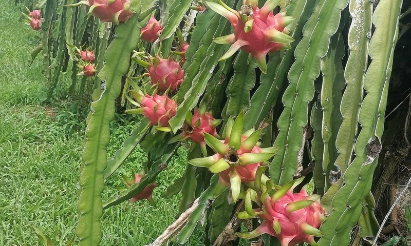
Thanh long giá còn vài nghìn một kg, người trồng thua lỗ 🔗 MOI
Tại tỉnh Lâm Đồng (Bình Thuận cũ), chị Lượng, chủ vườn 4.000 m2 thanh long, cho biết từ đầu tháng 5 đến nay giá mặt hàng này liên tục lao dốc và biến động mạnh. Hiện thanh long ruột trắng loại 1 được
Hàng loạt chế độ an sinh dự kiến tăng từ 1/7 🔗 MOI
Bổ sung người đóng BHXH đang hưởng trợ cấp vào lộ trình tăng hưu trí Từ 1/7, lương hưu, trợ cấp bảo hiểm xã hội (BHXH), trợ cấp hàng tháng với mức tăng 8% sẽ tác động gần 3,5 triệu người thuộc 9 nhóm
Hội Sách tranh thiếu nhi tại TP HCM 🔗 MOI
Chương trình sẽ diễn ra từ ngày 28 đến 31/5, chủ đề Sách tranh nâng đỡ trẻ em trong bối cảnh khó khăn . Điểm nhấn của sự kiện là triển lãm 100 cuốn sách tranh Việt Nam để yêu và nhớ tái hiện quá trình
Dòng nước ấm cung cấp sức mạnh cho siêu El Nino 🔗 MOI
Theo Futurism , mang tên sóng Kelvin, dòng nước này có nhiệt độ cao hơn 7,5 độ C so với mức trung bình ở một số vùng biển sâu, tích trữ lượng nhiệt lớn giữa đại dương. Sóng nước ấm dưới mặt biển đe dọ

CMC OpenAI phát triển mô hình AI pháp lý tiếng Việt 🔗 MOI
Bộ chuẩn đánh giá VLegal - Bench của nhóm nghiên cứu C-OpenAI đăng ký trên cổng arXiv của Trường đại học Cornell - Mỹ phiên bản mới nhất cập nhật ngày 25-12-2025. CMC OpenAI , công t

Vì sao càng dùng điện thoại, bạn càng khó ngủ? 🔗 MOI
Ánh sáng xanh từ điện thoại khiến não bộ “tỉnh táo giả” vào ban đêm Mỗi tối, hàng triệu người cầm điện thoại lên giường với suy nghĩ chỉ lướt vài phút trước khi ngủ. Nhưng thực tế, chính ánh sáng phát
Đọc nhanh KTSG Bản in 🔗 MOI
Trang mà bạn đang truy cập không tồn tại! Để đọc tiếp, bạn có thể click vào các trang bên dưới:!
Nghiên cứu thị trường 🔗 MOI
9 tháng đầu năm 2025, CPI tăng 3,27%, lạm phát cơ bản tăng 3,19%, Cục Thống kê đánh giá lạm phát 'đang trong tầm kiểm soát'.
Câu chuyện thương trường 🔗 MOI
Các dự án tập trung vào các lĩnh vực công nghiệp, hạ tầng, xử lý rác thải, thiết bị y tế, vật tư sản xuất nông nghiệp, may mặc, thương mại, dịch vụ tổng hợp, chế biến nông sản.

AirSnitch có thể chặn và theo dõi dữ liệu WiFi mà không cần mật khẩu 🔗 MOI
Nguy cơ nghe lén từ bên trong một mạng WiFi nội bộ - Ảnh: EZONE.HK Một kỹ thuật tấn công mới mang tên AirSnitch cho thấy WiFi có mật khẩu mạnh chưa chắc đã an toàn tuyệt đối. Dữ liệu người dùng vẫn có

ChatGPT giảm lỗi chữ méo, sai chính tả khi tạo ảnh 🔗 MOI
Giờ đây ChatGPT đã có thể tạo chữ trong ảnh chính xác hơn - Ảnh: REUTERS Trước đây, các công cụ AI tạo ảnh dù rất mạnh về hình ảnh nhưng lại gặp khó khăn khi xử lý chữ. Những lỗi như sai chính tả, biế

Code do AI viết nhanh hơn, nhưng lỗi nhiều gấp 1,7 lần con người 🔗 MOI
AI chuyển hóa từ ý tưởng sang sourcecode nhanh nhưng chưa tinh Nghiên cứu mới nhất từ CodeRabbit (một công cụ đánh giá mã nguồn phổ biến) chỉ ra rằng mã nguồn do AI tạo ra có tỉ lệ lỗi cao gấp 1,7 lần

ChatGPT cũng 'khoe' Wrapped, nhìn lại một năm bạn dùng AI 🔗 MOI
Cùng ChatGPT nhìn lại 1 năm đồng hành với tính năng Your Year with ChatGPT - Ảnh: OpenAI OpenAI vừa giới thiệu tính năng tổng kết năm cho người dùng ChatGPT , mang tên chính thức là 'Your Year

Tổng Bí thư, Chủ tịch nước Tô Lâm mong người Việt tại Sri Lanka phát huy bản sắc văn hóa dân tộc 🔗 MOI
Tổng Bí thư, Chủ tịch nước Tô Lâm gặp gỡ cán bộ cơ quan đại diện và cộng đồng người Việt Nam tại Sri Lanka - Ảnh: TTXVN Tại cuộc gặp, Tổng Bí thư, Chủ tịch nước Tô Lâm trò chuyện thân mật và thông báo

Siri có thể tích hợp ChatGPT, Gemini trên iOS 27 🔗 MOI
Người dùng có thể sớm được tự do lựa chọn "bộ não" AI cho Siri ngay trên giao diện iOS 27 Apple đang thử nghiệm một thay đổi đáng chú ý với Siri, khi cân nhắc cho phép tích hợp các mô hình AI bên ngoà

Những điểm check-in ở Nha Trang 'nổi rần rần trên mạng' 🔗 MOI
Bờ kè xóm Chụt đặc biệt thu hút giới trẻ đến check-in trong thời gian gần đây - Ảnh: TRẦN HOÀI Bên cạnh những điểm đến, các khu du lịch vốn đã nổi tiếng, nhiều điểm check-in miễn phí hoặc với chi phí

Mất hộ chiếu, có khi mắc kẹt cả tháng ở nước ngoài 🔗 MOI
Khi du lịch, cần bảo quản hộ chiếu, thẻ và tiền mặt ở các túi bao tử đeo bên mình, liên tục kiểm tra để hành trình luôn suôn sẻ - Ảnh: Matador Network Từ những câu chuyện thực tế, các hướng dẫn viên d

Vinhomes Green Paradise Cần Giờ khiến TP.HCM ‘mơ lớn' về du lịch thể thao, tại sao không? 🔗 MOI
Khoảng 5.000 runner đổ về Cần Giờ đi race VnExpress Marathon Green Paradise Cần Giờ - Ảnh: QUANG ĐỊNH Khởi công từ 19-4 năm ngoái, tới ngày 1-5, đại lộ Tương Lai - Thời Đại rộng, thẳng tắp thuộc dự án

Indonesia siết quản lý Roblox, buộc xác minh độ tuổi bằng khuôn mặt 🔗 MOI
Trẻ dưới 16 tuổi chơi Roblox ở Indonesia phải quét khuôn mặt xác minh độ tuổi - Ảnh: REUTERS Bà Nicky Jackson Colaco - Phó chủ tịch kiêm Giám đốc chính sách công toàn cầu của Roblox - cho biết công ty

Xử lý cụ ông 76 tuổi thường xuyên chia sẻ, đăng tải bài viết xúc phạm cảnh sát giao thông 🔗 MOI
Công an làm việc, xử lý hành vi vi phạm của ông H. - Ảnh: Công an cung cấp Ngày 14-5, Công an TP Hà Nội cho biết Phòng An ninh mạng và phòng, chống tội phạm sử dụng công nghệ cao vừa xử lý một người c

Tuyên án tù chung thân đối với Đào Minh Quân về tội khủng bố, hoạt động nhằm lật đổ chính quyền 🔗 MOI
Tuyên án tù chung thân đối với Đào Minh Quân về tội khủng bố, hoạt động nhằm lật đổ chính quyền nhân dân - Ảnh: TTXVN Bị cáo Đào Minh Quân - đối tượng cầm đầu tổ chức "Chính phủ quốc gia Việt Nam lâm

Xã miền núi thu 46 tỉ từ YouTube, TikTok, Facebook 🔗 MOI
Phiên chợ số bán sản phẩm địa phương ở Lâm Bình - Ảnh: CÔNG ĐẠI Ngày 2-5, lãnh đạo UBND xã Lâm Bình (tỉnh Tuyên Quang) cho biết UBND xã vừa công bố đề án xây dựng thí điểm "Làng sáng tạo nội dung số g
Không thể giao trẻ em cho mạng xã hội: Thầy cô bớt giao bài qua Zalo, K12 được không? 🔗 MOI
Học online nhiều có thể vô tình kéo trẻ lên mạng xã hội - Ảnh: QUANG ĐỊNH Tôi rất đồng tình với bài viết "Không thể giao trẻ em cho mạng xã hội: Khi học online vô tình kéo trẻ vào mạng" trên Tuổi Trẻ
Top 10 bãi biển đẹp nhất châu Á không có đại diện của Việt Nam 🔗 MOI
Bãi biển Banana - Ảnh: TRIPADVISOR Mới đây, nền tảng du lịch trực tuyến Tripadvisor vừa công bố danh sách top 10 bãi biển đẹp nhất châu Á với những cái tên đến từ Thái Lan, Ấn Độ, Indonesia…, tuy nhiê

Giải mã hiện tượng du khách đổ đến Huế, Đà Nẵng 🔗 MOI
Khu vực đôi bờ sông Hàn (Đà Nẵng) đông nghẹt người vào cao điểm giỗ Tổ Hùng Vương - Ảnh: B.D. Hình ảnh hàng ngàn người ken đặc, chen nhau đi qua Ngọ Môn để tham quan Đại Nội Huế về đêm trở thành khoản

HLV Philippe Troussier: U22 Việt Nam có sức ép 🔗 MOI
Tiền vệ Công Đến (giữa) trên sân tập tại Campuchia chiều 26-4 - Ảnh: N.K. "Chúng tôi có sức ép về mục tiêu tại SEA Games . Chúng tôi có sức ép phải chơi thứ bóng đá tốt nhất của mình.

Xem video siêu phẩm từ giữa sân của Chanathip vào lưới Công An Hà Nội 🔗 MOI
Video Chanathip lập siêu phẩm vào lưới Công An Hà Nội - Nguồn: FPT Play Ở trận đấu này, CLB Công An Hà Nội đã sớm có bàn thắng dẫn trước ở phút 20 nhờ công của Alan. Sau đó, đại diện bóng đá Việt Nam

Mùng 3 Tết, Lễ hội xuân Cần Giờ tại Vinhomes Green Paradise đông vui vượt mong đợi 🔗 MOI
Gian hàng ông đồ thu hút nhiều người đến xin chữ đầu năm - Ảnh: VĨNH SƯƠNG Chị Hằng, một cư dân sống ở Cần Giờ (TP.HCM) nhiều năm, chia sẻ chị không nghĩ Lễ hội xuân Cần Giờ lại đông vui đến vậy. “Lễ
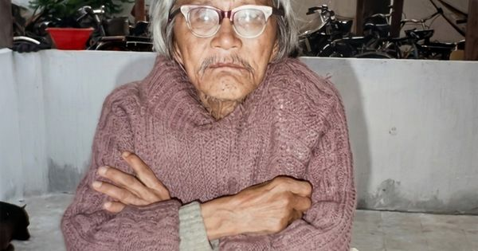
Sài Gòn hồi mới vào trong di cảo Bùi Giáng 🔗 MOI
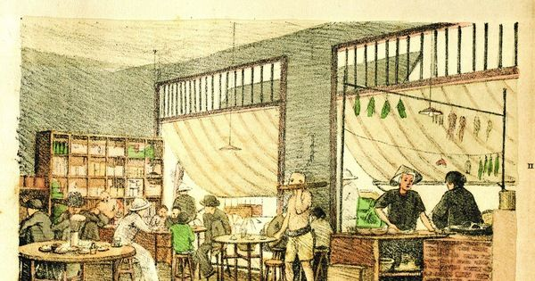